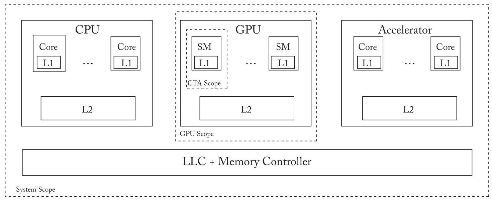
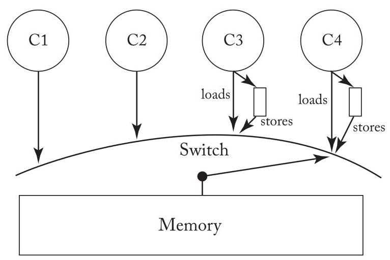
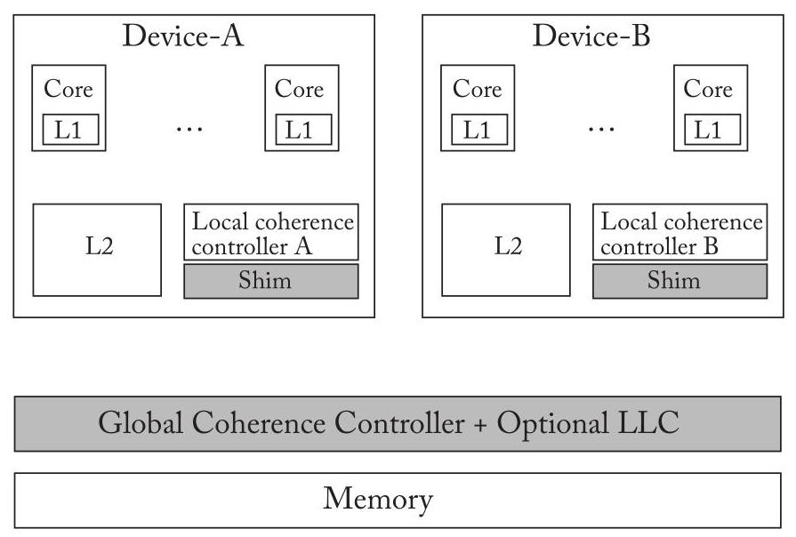
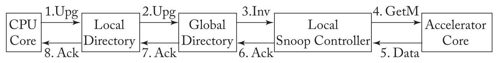
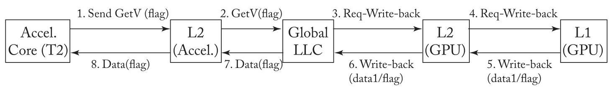
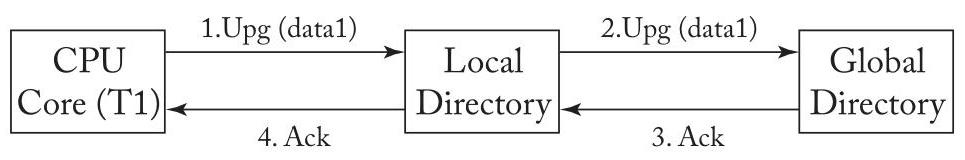
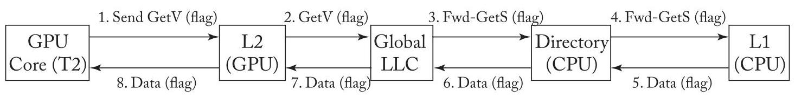
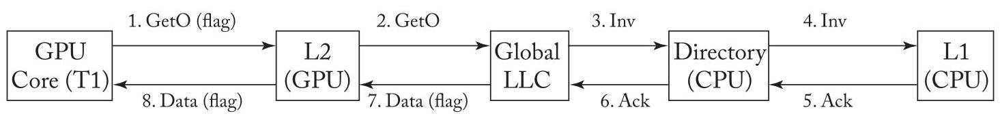
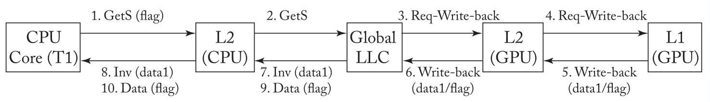

U10 translated
CHAPTER 10 Consistency and Coherence for Heterogeneous Systems
This is the age of specialization. Today's server, mobile, and desktop processors contain not only conventional CPUs, but also various flavors of accelerators. The most prominent among the accelerators are Graphics Processing Units (GPUs). Other types of accelerators including Digital Signal Processors (DSPs), AI accelerators (e.g., Apple's Neural Engine, Google's TPU), cryptographic accelerators, and field-programmable-gate-arrays (FPGAs) are also becoming common.
这是专业化的时代。当今的服务器、移动和桌面处理器不仅包含传统的中央处理器 (CPUs)，还包含多种类型的加速器。其中最突出的是图形处理器 (GPUs)。其他类型的加速器，包括数字信号处理器 (DSPs)、人工智能加速器 (AI accelerators)（例如，苹果的神经网络引擎 (Neural Engine)、谷歌的张量处理器 (TPU)）、加密加速器 (cryptographic accelerators) 和现场可编程门阵列 (FPGAs)，也正变得普遍。
Such heterogeneous architectures, however, pose a programmability challenge. How to synchronize and communicate within and across the accelerators? And, how to do this efficiently? One promising trend is to expose a global shared memory interface across the CPUs and the accelerators. Recall that shared memory helps not only with programmability by providing an intuitive load-store interface for communication, but also helps in reaping the benefits of locality via programmer-transparent caching.
然而，这种异构架构（heterogeneous architectures）带来了可编程性挑战。如何在加速器内部及跨加速器之间进行同步和通信？以及，如何高效地做到这一点？一个有望的趋势是提供跨CPU和加速器的全局共享内存接口。回顾一下，共享内存不仅通过提供直观的加载-存储接口（load-store interface）用于通信而有助于提高可编程性，而且还能借助对程序员透明的缓存机制，帮助获取数据局部性的好处。
CPUs, GPUs, and other accelerators can either be tightly integrated and actually share the same physical memory, as is the case in mobile systems-on-chips, or they may have physically independent memories with a runtime that provides a logical abstraction of shared memory. Unless specified otherwise, we assume the former. As shown in Figure 10.1, each of the CPUs, GPUs, and accelerators may have multiple cores with private per-core L1s and a shared L2. The CPUs and the accelerators also may share a memory-side last-level cache (LLC) that, unless specified otherwise, is non-inclusive. (Recall that a memory-side LLC does not pose coherency issues). The LLC also serves as an on-chip memory controller.
CPU、GPU及其他加速器可以紧密集成并实际共享同一物理内存，如移动系统中的片上系统 (system-on-chips)，或者它们可能具有物理上独立的内存，并通过一个运行时提供共享内存的逻辑抽象。除非特别说明，我们假设为前者。如图10.1所示，每个CPU、GPU和加速器可能包含多个核心，每个核心拥有私有的L1缓存并共享一个L2缓存。CPU和加速器还可能共享一个内存侧的末级缓存 (last-level cache, LLC)，除非特别说明，该缓存是非包含性的。（回想一下，内存侧的LLC不会引发一致性问题。）该LLC同时充当片上内存控制器。
Shared memory automatically raises questions. What is the consistency model? How is the consistency model (efficiently) enforced? In particular, how are the caches within an accelerator (the L1s) and across the CPUs and accelerators (L1s and L2s) kept coherent?
共享内存 (Shared memory) 自然而然地引发疑问。什么是一致性模型 (consistency model)？如何（高效地）实施一致性模型？特别是，如何保持加速器 (accelerator) 内部的缓存（L1缓存）以及跨 CPU 与加速器之间的缓存（L1和L2缓存）一致？
In this chapter, we discuss potential answers to these questions in this fast moving area. We first study consistency and coherence within an accelerator, focusing on GPUs. We then consider consistency and coherence across the accelerators and the CPU.
在本章中，我们讨论这个快速发展领域中针对这些问题的潜在答案。我们首先研究加速器内部的一致性 (consistency) 和连贯性 (coherence)，重点关注 GPU。然后我们考虑跨加速器和 CPU 的一致性和连贯性。
10.1 GPU CONSISTENCY AND COHERENCE
We start this section by briefly summarizing early GPU architectures and their programming model. This will help us appreciate the design choices with regard to consistency and coherence in such GPUs, which were primarily targeted toward graphics workloads. We then discuss the trend of using GPU-like architectures to run general-purpose workloads in so-called General-Purpose Graphics Processing Units (GPGPUs) [5]. Specifically, we discuss the new demands that GPGPUs place on consistency and coherence. We then discuss in detail some of the recent proposals for fulfilling these demands.
我们在本节开头简要总结早期图形处理器 (GPU) 架构及其编程模型 (programming model)。这将有助于我们理解此类 GPU 中有关一致性 (consistency) 与连贯性 (coherence) 的设计选择，这些 GPU 主要面向图形工作负载 (graphics workloads)。随后我们讨论使用类 GPU 架构在所谓的通用图形处理器 (General-Purpose Graphics Processing Units, GPGPUs) [5] 上运行通用工作负载的趋势。具体来说，我们讨论 GPGPU 对一致性与连贯性提出的新需求。然后我们详细讨论近期为满足这些需求而提出的一些方案。

Figure 10.1: System model of a heterogeneous system-on-chip containing a CPU, GPU, and accelerator. SM refers to a streaming multi-processor; CTA refers to cooperative thread array.
图 10.1：包含 CPU、GPU 和加速器的异构片上系统（system-on-chip）的系统模型。SM 指流多处理器（streaming multi-processor）；CTA 指协作线程阵列（cooperative thread array）。
10.1.1 EARLY GPUS: ARCHITECTURE AND PROGRAMMING MODEL
Early GPUs were primarily tailored toward embarrassingly parallel graphics workloads. Roughly speaking, the workloads involve computing independently each of the pixels that constitute the display. Thus, the workloads are characterized by a very high degree of data-parallelism and low degrees of data sharing, synchronization, and communication.
早期 GPU 主要针对高度并行 (embarrassingly parallel) 的图形工作负载进行定制。粗略来说，这些工作负载包括独立计算构成显示器的每个像素。因此，这些工作负载具有非常高的数据并行性 (data-parallelism) 以及低程度的数据共享、同步和通信。
GPU Architecture
To exploit the abundance of parallelism, GPUs typically have tens of cores called Streaming Multiprocessors (SMs) \({}^{1}\) , as shown in Figure 10.1. Each SM is highly multithreaded, capable of running on the order of a thousand threads. The threads mapped to an SM share the L1 cache and a local scratchpad memory (not shown). All of the SMs share an L2 cache.
为了充分利用丰富的并行性，GPU 通常拥有数十个称为流式多处理器（Streaming Multiprocessors, SMs）\({}^{1}\) 的核心，如图 10.1 所示。每个 SM 具有高度多线程能力，能运行约一千个线程。映射到一个 SM 的线程共享 L1 缓存和本地暂存存储器（未显示）。所有 SM 共享一个 L2 缓存。
In order to amortize the cost of fetching and decoding instructions for all of these threads, GPUs typically execute threads in groups called warps. \({}^{2}\) All of the threads in a warp share the program counter (PC) and the stack, but can still execute independent thread-specific paths using mask-bits that specify which threads among the warps are active and which threads should not execute. This style of parallelism is known as "Single-Instruction-Multiple-Threads" (SIMT). Because all of the threads in a warp share the PC, traditionally the threads in a warp were scheduled together. Recently, however, GPUs are starting to allow for threads within a warp to have independent PCs and stacks, and consequently allow for the threads to be independently scheduled. For the rest of the discussion, we assume that threads can be independently scheduled.
为了分摊所有线程取指和解码指令的开销，GPU 通常以称为线程束 (warp) 的组为单位执行线程。\({}^{2}\) 一个线程束中的所有线程共享程序计数器 (PC) 和栈，但仍可以利用掩码位执行各自独立的线程特定路径，这些掩码位指定线程束中哪些线程处于活跃状态、哪些不应执行。这种并行风格被称为“单指令多线程”(SIMT)。由于线程束中的所有线程共享 PC，传统上线程束中的线程是一起调度的。然而，近来 GPU 开始允许线程束内的线程拥有独立的 PC 和栈，从而使得这些线程可以被独立调度。在接下来的讨论中，我们假定线程是可以独立调度的。
\({}^{1}\) SM in NVIDIA parlance. Also known as Compute Units (CUs) in AMD parlance.
\({}^{1}\) 流式多处理器 (SM) 在 NVIDIA 术语中。在 AMD 术语中，也称为计算单元 (CUs)。
\({}^{2}\) Warp in NVIDIA parlance. Also known as Wavefront in AMD parlance.
\({}^{2}\) 在 NVIDIA 术语中称为线程束 (Warp)，在 AMD 术语中则称为波前 (Wavefront)。
Because graphics workloads do not share data or synchronize frequently-synchronization and communication typically happening infrequently at a coarser level of granularity—early GPUs chose not to implement hardware cache coherence for the L1 caches. (They did not enforce the SWMR invariant.) The absence of hardware cache coherence makes synchronization a trickier prospect for the programmer, as we see next.
由于图形工作负载不频繁共享数据或同步——同步和通信通常以较粗粒度不频繁地发生——早期GPU选择不实现L1缓存的硬件缓存一致性。（它们没有强制实施单写多读（SWMR）不变式。）如我们接下来所见，硬件缓存一致性的缺失使得同步对程序员来说前景更加棘手。
GPU Programming model
Analogously to the CPU instruction set architecture (ISA), the GPUs also have virtual ISAs. NVIDIA's virtual ISA, for example, is known as Parallel Thread Execution (PTX). In addition, there are higher-level language frameworks. Two such frameworks are especially popular: CUDA and OpenCL. The high-level programs in these frameworks are compiled down to virtual ISAs, which in turn are translated into native binaries at kernel installation time. A kernel refers to a unit of work offloaded by the CPU onto the GPU and typically consists of a large number of software threads.
类似于CPU的指令集架构 (instruction set architecture, ISA)，GPU也有虚拟ISA。例如，NVIDIA的虚拟ISA被称为并行线程执行 (Parallel Thread Execution, PTX)。此外，还有高层语言框架。其中两种框架尤其流行：CUDA和OpenCL。这些框架中的高层程序被编译为虚拟ISA，继而在内核安装时被转换为原生二进制码。内核 (kernel) 指的是由CPU卸载到GPU上的一个工作单元，通常包含大量的软件线程 (software threads)。
GPU virtual ISAs as well as language frameworks choose to expose the hierarchical nature of GPU architectures to the programmer via a thread hierarchy known as scopes [15]. In contrast to CPU threads where all threads are "equal", GPU threads from a kernel are grouped into clusters called Cooperative Thread Arrays (CTA). \({}^{3}\) A CTA scope refers to the set of threads from the same CTA. Such threads are guaranteed to be mapped to the same SM and hence share the same L1. Thus, the CTA scope also implicitly refers to the memory hierarchy level (L1') that all of these threads share. A GPU scope refers to the set of threads from the same GPU. These threads could be from the same or different CTAs from that GPU. All of these threads share the L2. Thus, the GPU scope implicitly refers to the L2. Finally, System scope refers to the set of all threads from the whole system. These threads can be from the CPU, GPU, or other accelerators that constitute the system. All of these threads may share a cache (LLC). Thus, the System scope implicitly refers to the LLC, or unified shared memory if there is no shared LLC.
GPU 虚拟指令集架构（Virtual ISA）与语言框架选择通过称为作用域（Scope）的线程层次向程序员暴露 GPU 架构的层次化本质 [15]。与所有线程“平等”的 CPU 线程不同，来自一个内核的 GPU 线程被分组为称为协作线程阵列（Cooperative Thread Array, CTA）的集群。\({}^{3}\) CTA 作用域指来自同一 CTA 的线程集合。这些线程保证被映射到同一 SM，因此共享同一 L1。因此，CTA 作用域也隐式地指代所有这些线程共享的内存层次级别（L1'）。GPU 作用域指来自同一 GPU 的线程集合。这些线程可以来自该 GPU 的同一 CTA 或不同 CTA。所有这些线程共享 L2。因此，GPU 作用域隐式地指代 L2。最后，系统作用域（System Scope）指整个系统中所有线程的集合。这些线程可以来自 CPU、GPU 或构成系统的其他加速器。所有这些线程可能共享一个缓存（末级缓存，LLC）。因此，系统作用域隐式地指代 LLC，或者在不存在共享 LLC 时指代统一共享内存。
Why expose the thread and memory hierarchy to the software? In the absence of hardware cache coherence, this allows for programmers and hardware to cooperatively achieve synchronization efficiently. Specifically, if the programmer ensures that two synchronizing threads are within the same CTA, the threads can synchronize and communicate efficiently via the L1 cache.
为什么将线程和内存层次结构暴露给软件？在缺乏硬件缓存一致性的情况下，这使得程序员和硬件能够协同高效地实现同步。具体来说，如果程序员确保两个正在同步的线程位于同一个协作线程阵列 (CTA) 内，那么这些线程可以通过一级缓存 (L1 cache) 高效地进行同步和通信。
\({}^{3}\) CTA in PTX parlance. Also known as Workgroups in OpenCL and as thread blocks in CUDA.
\({}^{3}\) 在 PTX 用语中称为 CTA（协作线程数组），在 OpenCL 中称为工作组（Workgroups），在 CUDA 中称为线程块（thread blocks）。
\({}^{4}\) and the local scratchpad memory, if present
\({}^{4}\) 以及本地暂存存储器 (local scratchpad memory)（如果存在的话）
214 10. CONSISTENCY AND COHERENCE FOR HETEROGENEOUS SYSTEMS
How can two threads belonging to different CTAs from the same GPU kernel synchronize? Somewhat surprisingly, early GPU consistency models did not explicitly allow this. In practice, though, programmers could achieve GPU-scoped synchronization via specially crafted loads and stores that bypass the L1 and synchronize at the shared L2. Needless to say, this was causing a great deal of confusion among the programmers [8]. In the next section, we explore GPU consistency in detail with examples.
属于同一个 GPU 内核 (GPU kernel) 的不同协作线程阵列 (CTA) 的两个线程如何同步？有点令人惊讶的是，早期的 GPU 一致性模型 (GPU consistency model) 并未明确允许这种做法。然而在实践中，程序员可以通过特别设计的加载和存储操作来绕过 L1 缓存 (L1 cache) 并在共享的 L2 缓存 (L2 cache) 处进行同步，从而实现 GPU 范围的同步 (GPU-scoped synchronization)。不用说，这在程序员中造成了极大的困惑 [8]。在下一节中，我们将通过示例详细探讨 GPU 一致性模型。
GPU Consistency
GPUs support relaxed memory consistency models. Like relaxed consistency CPUs, GPUs enforce only the memory orderings indicated by the programmer, e.g., via FENCE instructions.
GPU 支持宽松的内存一致性模型（relaxed memory consistency models）。与宽松一致性 CPU（relaxed consistency CPUs）一样，GPU 仅强制执行程序员指示的内存排序（memory orderings），例如通过 FENCE 指令（FENCE instructions）。
However, because of the absence of hardware cache coherence in GPUs, the semantics of a FENCE instruction is different. Recall that a FENCE instruction in a multicore CPU ensures that loads and stores before the FENCE are performed, with respect to all threads, before the loads and stores following the FENCE. A GPU FENCE provides similar semantics, but only with respect to other threads belonging to the same CTA. A corollary of this is that GPU stores lack atomicity. Recall that store atomicity (Section 5.5.2) mandates that a thread's store is logically seen by all other threads at once. In GPUs, however, a store may become visible to a thread belonging to the same CTA before other threads.
然而，由于 GPU 中缺乏硬件缓存一致性，FENCE 指令的语义有所不同。回想一下，多核 CPU 中的 FENCE 指令确保相对于所有线程，在 FENCE 之前的加载和存储都会先于 FENCE 之后的加载和存储执行。GPU 的 FENCE 提供类似的语义，但仅针对同一协同线程数组（CTA）内的其他线程。由此产生的一个推论是 GPU 存储缺乏原子性。回想存储原子性（第 5.5.2 节）要求一个线程的存储操作在逻辑上被所有其他线程同时观察到。然而，在 GPU 中，一个存储可能会先于其他线程而对同一 CTA 内的线程可见。
Consider the message-passing example shown in Table 10.1 where the programmer intends for load Ld2 to read NEW and not the old value of 0 . How does one ensure this?
考虑表10.1中所示的消息传递 (message-passing) 示例，其中程序员希望加载 (load) Ld2 读取 NEW，而不是旧值 0。如何确保这一点呢？
Table 10.1: Message passing example. T1 and T2 belong to the same CTA.
表 10.1: 消息传递示例。T1 和 T2 属于同一个协作线程阵列 (CTA)。
| Thread T1 | Thread T2 | Comments |
| St1: St data = NEW; FENCE; St2: St flag = SET; | Ld1: Ld r1 = flag; B1: if (r1 ≠ SET) goto Ld1; FENCE; Ld2: Ld r2 = data; | // Initially data and flag are 0. Can r2==0? |
First of all, note that without the two FENCE instructions, Ld2 can read the old value of 0-GPUs, being relaxed, may perform loads and stores out of order.
首先，请注意，如果没有这两条 FENCE 指令，Ld2 可以读到 0 的旧值。由于采用宽松内存模型（relaxed），GPU 可能会乱序执行加载（load）和存储（store）操作。
Now, let us suppose that the two threads T1 and T2 belong to the same CTA, and are hence mapped to the same SM. At the microarchitectural level, a GPU FENCE works similarly to a FENCE in XC, as we discussed in Chapter 5. The reorder unit ensures that the Load/Store \(\rightarrow\) FENCE and FENCE \(\rightarrow\) Load/Store orderings are enforced. Because T1 and T2 share an L1, honoring the above rules is sufficient to ensure that the two stores from T1 are made visible to T2 in program order, ensuring that load L2 reads NEW.
现在，假设两个线程 T1 和 T2 属于同一个协作线程阵列（CTA），因而被映射到同一个流式多处理器（SM）。在微架构层面，GPU 栅栏（FENCE）的工作方式与 XC 中的栅栏类似，正如我们在第 5 章中所讨论的。重排序单元确保强制执行加载/存储 (Load/Store) \(\rightarrow\) 栅栏，以及栅栏 \(\rightarrow\) 加载/存储的排序。由于 T1 和 T2 共享一级缓存（L1），遵守上述规则足以确保 T1 的两个存储按程序顺序对 T2 可见，从而保证加载 L2 读到新值 (NEW)。
10.1. GPU CONSISTENCY AND COHERENCE 215
10.1. GPU 一致性（consistency）与一致性（coherence）215
Table 10.2: Message passing example. T1 and T2 belong to different CTAs.
表10.2：消息传递示例。T1和T2属于不同的协作线程数组 (CTA)。
| Thread T1 | Thread T2 | Comments |
| St1: St.GPU data = NEW; FENCE; St2: St.GPU flag = SET; | Ld1: Ld.GPU r1 = flag; B1: if (r1 ≠ SET) goto Ld1; FENCE; Ld2: Ld.GPU r2 = data; | // Initially data and flag are 0 . Can r2==0? |
On the other hand, if the two threads T1 and T2 belong to different CTAs, and hence are mapped to different SMs (SM1 and SM2), it is possible for load Ld2 to read 0 . To see how, consider the following sequence of events.
另一方面，如果两个线程 T1 和 T2 属于不同的协作线程阵列（CTA），并因此映射到不同的流多处理器（SM1 和 SM2），那么加载指令 Ld2 就有可能读到 0。要理解为何，请考虑以下事件序列。
- Initially, both data and flag are cached in both L1s.
- 最初，数据和标志都被缓存于两个一级缓存（L1s）中。
- St1 and St2 perform in program order, writing NEW and SET, respectively, in SM1's L1 cache.
- St1 和 St2 按程序顺序（program order）执行，分别在 SM1 的一级缓存（L1 cache）中写入 NEW 和 SET。
- The cache line holding flag is evicted from SM1's L1, and flag=SET is written to the L2.
- 包含 flag 的缓存行 (cache line) 被从 SM1 的一级缓存 (L1) 中逐出 (evicted)，并且 flag=SET 被写入二级缓存 (L2)。
- The cache line holding flag in SM2's L1 is evicted.
- SM2的L1缓存中持有标志 (flag) 的缓存行 (cache line) 被驱逐 (evicted)。
- The load Ld1 performs and misses in SM2's L1, so the line from the L2 is fetched and reads SET.
- 加载操作 Ld1 在流多处理器2 (SM2) 的一级缓存 (L1) 中执行并发生未命中，因此从二级缓存 (L2) 获取了该缓存行，并读出了 SET。
- The load Ld2 performs, hits in SM2's L1, and reads 0.
- 加载指令 Ld2 执行，命中 SM2 的 L1 缓存，并读取 0。
Thus, although the FENCE ensures that the two stores are written to SM1's L1 in the correct order, they may become visible to T2 in a different order in the absence of hardware cache coherence. That is why early GPU programming manuals explicitly disallow this type of inter-CTA synchronization between threads of the same kernel.
因此，尽管 FENCE 确保了两个存储操作 (stores) 以正确的顺序写入 SM1 的 L1 缓存，但在缺乏硬件缓存一致性 (hardware cache coherence) 的情况下，它们对 T2 的可见顺序可能会不同。这就是为什么早期的 GPU 编程手册明确禁止同一内核的线程之间进行这种 CTA 间同步 (inter-CTA synchronization)。
Is inter-CTA synchronization then impossible to achieve? In practice, a workaround is possible, leveraging special load and store instructions that directly target specific levels of the memory hierarchy. As we can see in Table 10.2, the two stores in T1 explicitly write to the GPU scope (i.e., to the L2) bypassing the L1. Likewise, the two loads from T2 bypass the L1 and read directly from the L2. Thus, the two threads of GPU scope, T1 and T2, are explicitly made to synchronize at the L2 by using loads and stores that bypass the L1.
那么，CTA 间同步 (inter-CTA synchronization) 是否就无法实现了呢？实际上，可以利用直接针对存储层次 (memory hierarchy) 特定级别的特殊加载和存储指令 (load and store instructions) 采取一种变通方案 (workaround)。如我们可以在表10.2中看到的，T1中的两条存储指令显式地写入GPU作用域 (GPU scope)（即写入L2），绕过L1。同样，T2中的两条加载指令也绕过L1，直接从L2读取。因此，这两个GPU作用域的线程T1和T2，通过使用绕过L1的加载和存储指令，显式地在L2处进行同步。
However, there are problems with the above workaround--the primary issue being performance inefficiency owing to loads and stores bypassing the L1. In this simple example, the two variables in question must be communicated across SMs, so bypassing is a necessary evil. However, bypassing may be problematic with more variables, only some of which are communicated across SMs. In such a situation, the programmer is confronted with the onerous task
然而，上述变通方案存在问题——主要问题在于因加载和存储绕过 L1 缓存而导致的性能低效。在这个简单示例中，所涉及的两个变量必须在 SM 之间进行通信，因此绕过是不可避免的弊端。然而，当变量更多且只有部分需要在 SM 间通信时，绕过可能就会带来问题。在这种情况下，程序员将面临一项繁重的任务，
216 10. CONSISTENCY AND COHERENCE FOR HETEROGENEOUS SYSTEMS
of carefully directing loads/stores to the appropriate memory hierarchy level in order to make effective use of the L1.
将加载/存储操作谨慎地导向适当的存储器层次级别，以有效利用一级缓存 (L1)
Flashback to Quiz Question 8: GPUs do not support hardware cache coherence. Therefore, they are unable to enforce a memory consistency model. True or false?
回顾测验问题 8：GPU 不支持硬件缓存一致性 (hardware cache coherence)。因此，它们无法强制实施内存一致性模型 (memory consistency model)。对还是错？
Answer: False! Early GPUs did not support cache coherence in hardware, yet supported scoped relaxed consistency models.
答案：错误！早期的GPU在硬件上不支持缓存一致性（cache coherence），但却支持作用域放松一致性模型（scoped relaxed consistency models）。
Summary: Limitations and Requirements
Early GPUs were primarily targeted toward embarrassingly parallel workloads that neither synchronized nor shared data frequently. Therefore, such GPUs chose not to support hardware cache coherence for keeping the local caches coherent, at the cost of a scoped memory consistency model that permitted only intra-CTA synchronization. More flexible inter-CTA synchronization was either too inefficient or placed a huge burden on programmers.
早期的 GPU 主要面向那些既不频繁进行同步也不频繁共享数据的极易并行工作负载（embarrassingly parallel workloads）。因此，此类 GPU 选择不支持用于保持本地缓存（local caches）一致的硬件缓存一致性（hardware cache coherence），代价是采用了仅允许协作线程阵列（CTA）内同步（intra-CTA synchronization）的作用域受限的内存一致性模型（scoped memory consistency model）。更灵活的 CTA 间同步（inter-CTA synchronization）要么效率太低，要么给程序员带来了巨大负担。
Programmers are starting to use GPUs for general purpose workloads. Such workloads tend to involve relatively frequent fine-grained synchronization and more general sharing patterns. Thus, it is desirable for a GPGPU to have:
程序员开始使用图形处理器 (GPU) 进行通用计算工作负载。这类工作负载往往涉及相对频繁的细粒度同步和更通用的共享模式。因此，理想的通用图形处理器 (GPGPU) 应当具备：
- a rigorous and intuitive memory consistency model that permits synchronization across all threads; and
- 一种严格且直观的内存一致性模型（memory consistency model），允许跨所有线程进行同步；以及
- a coherence protocol that enforces the consistency model while allowing for efficient data sharing and synchronization, while at the same time keeping the simplicity of the conventional GPU architecture, as GPUs will still cater to graphic workloads predominantly.
- 一种一致性协议 (coherence protocol)，该协议强制执行一致性模型 (consistency model) 的同时允许高效的数据共享 (data sharing) 和同步 (synchronization)，同时保持传统图形处理器架构 (GPU architecture) 的简洁性，因为 GPU 仍将主要服务于图形工作负载 (graphic workloads)。
10.1.2 BIG PICTURE: GPGPU CONSISTENCY AND COHERENCE
We already outlined the desired properties for GPGPU consistency and coherence. One straightforward approach to meeting these demands is to use a multicore CPU-like approach to coherence and consistency, i.e., use one of the consistency-agnostic coherence protocols (that we covered at length in Chapters 6-9) to ideally enforce a strong consistency model such as sequential consistency (SC). Despite ticking almost all boxes-the consistency model is certainly intuitive (without the notion of scopes) and the coherence protocol allows for the efficient sharing of data-the approach is ill-suited for a GPU. There are two major reasons for this [30].
我们已经概述了通用GPU（GPGPU）连贯性（coherence）和一致性（consistency）的期望属性。满足这些需求的一个直接方法是采用类似多核CPU的方法处理连贯性和一致性，即使用一种与一致性无关的连贯协议（我们在第6-9章中详细介绍了这些协议）来理想地强制执行强一致性模型，如顺序一致性（SC）。尽管几乎满足了所有要求——一致性模型无疑是直观的（无需作用域概念），且连贯协议允许高效共享数据——但这种方法并不适合GPU。这有两个主要原因[30]。
First, a CPU-like coherence protocol that invalidates sharers upon a write would incur a high traffic overhead in the GPU context. This is because the aggregate capacity of the local caches (L1s) in GPUs is typically comparable to, or even greater than, the size of the L2. The NVIDIA Volta GPU, for example, has an aggregate capacity of about 10 MB of L1 cache and only 6 MB of L2 cache. A standalone inclusive directory would not only incur a large area overhead owing to the duplicate tags, but also significant complexity because the directory would
首先，类似CPU的缓存一致性协议（CPU-like coherence protocol）在写入时使共享者无效，这会在GPU环境中带来高流量开销。这是因为GPU中本地缓存（L1）的总容量（aggregate capacity）通常与L2的大小相当，甚至更大。例如，NVIDIA Volta GPU具有约10 MB的L1缓存总容量，L2缓存仅有6 MB。一个独立的包容性目录（inclusive directory）不仅会因重复标签（duplicate tags）而产生巨大的面积开销（area overhead），还会带来显著的复杂性，因为该目录会
10.1. GPU CONSISTENCY AND COHERENCE 217 need to be highly associative. On the other hand, an embedded inclusive directory would result in a significant amount of recall traffic upon L2 evictions, given the size of the aggregate L1s.
10.1. GPU 一致性 (consistency) 与缓存一致性 (coherence) 217 需要具有高关联度。另一方面，鉴于聚合一级缓存的大小，嵌入式包含目录 (inclusive directory) 会在二级缓存淘汰时产生大量的回读流量。
Second, because GPUs maintain thousands of active hardware threads, there is a need to track a correspondingly high number of coherence transactions, which would cost significant hardware overhead.
其次，由于GPU维护数千个活跃的硬件线程（hardware threads），因此需要追踪相应的大量一致性事务（coherence transactions），这将带来显著的硬件开销。
Without writer-initiated invalidations, how can a store be propagated to other non-local L1 caches? (I.e., how can the store be made visible to threads belonging to other CTAs?) Without writer-initiated invalidations, how can a consistency model-let alone a strong consistency model-be enforced?
如果没有写者发起的无效化（writer-initiated invalidations），一个存储（store）如何被传播到其他非本地 L1 缓存（non-local L1 caches）？（即，该存储如何对属于其他协作线程数组（Cooperative Thread Array，CTA）的线程（threads）可见？）如果没有写者发起的无效化，一致性模型（consistency model）——更不用说强一致性模型（strong consistency model）——如何被强制执行？
In Sections 10.1.3 and 10.1.4, we discuss two proposals that employ self-invalidation [18], whereby a processor invalidates lines in its local cache to ensure that stores from other threads become visible.
在第10.1.3节和10.1.4节中，我们讨论两种采用自失效（self-invalidation）[18]的提案，通过这种机制，处理器使其本地缓存中的缓存行失效，以确保来自其他线程的存储操作变为可见。
What consistency model can the self-invalidation protocols enforce efficiently? We argue that such protocols are amenable to efficiently enforcing relaxed consistency models directly, rather than enforcing consistency-agnostic invariants such as the SWMR invariant.
自失效协议能够高效实施哪种一致性模型？我们认为，这类协议能够直接高效地实施松弛一致性模型 (relaxed consistency models)，而不是实施与一致性无关的不变量 (consistency-agnostic invariants)，例如 SWMR 不变量 (SWMR invariant)。
Whether or not the consistency model should include scopes is under debate [15, 16, 23]. Whereas scopes adds complexity for programmers, they arguably simplify coherence implementations. Because scopes cannot be ruled out, we outline a scoped consistency model that does not limit synchronization to within a subset of scopes in Section 10.1.4. It is worth noting that the consistency model we introduce is similar in spirit to the ones used in today's industrial GPUs (which all use scoped models that do not limit synchronization to within a subset of scopes).
一致性模型 (consistency model) 是否应该包含作用域 (scopes) 目前仍存在争议 [15, 16, 23]。尽管作用域增加了程序员的复杂性，但它们据称可以简化一致性实现 (coherence implementations)。由于无法排除作用域，我们在第 10.1.4 节中概述了一种不将同步限制在作用域子集内作用域一致性模型 (scoped consistency model)。值得注意的是，我们引入的一致性模型在精神上类似于当今工业 GPU 中使用的模型（它们都使用不将同步限制在作用域子集内的作用域模型）。
10.1.3 TEMPORAL COHERENCE
In this section, we discuss a self-invalidation based approach for enforcing coherence called temporal coherence [30]. The key idea is that each reader brings in a cache block for a finite period of time called the lease, at the end of which time the block is self-invalidated. We discuss two variants of temporal coherence: (1) a consistency-agnostic variant that enforces SWMR, in which a writer stalls until all of the leases for the block expire; and (2) a more efficient consistency-directed variant that directly enforces a relaxed consistency model, in which FENCEs, rather than writers, stall. For the following discussion, we assume that the shared cache (L2) is inclusive: a block not present in the shared L2 implies that it is not present in any of the local L1s. We also assume that the L1s use a write-through/no write-allocate policy: writes are directly written to the L2 (write-through) and a write to a block that is not present in the L1 does not allocate a block in the L1 (no write-allocate).
在本节中，我们讨论一种基于自失效（self-invalidation）的一致性强制方法，称为时间一致性（temporal coherence）[30]。其核心思想是，每个读取者将一个缓存块引入并保持一段有限的时间，该时间段称为租约（lease），租约到期时该块将自失效（self-invalidated）。我们讨论时间一致性的两种变体：（1）一种与一致性无关（consistency-agnostic）的变体，它强制实现单写者多读者（SWMR），其中写者会停顿，直到该块的所有租约到期；（2）一种更高效的一致性引导（consistency-directed）变体，它直接强制实现放松一致性模型（relaxed consistency model），其中是屏障（FENCEs）而非写者发生停顿。在接下来的讨论中，我们假设共享缓存（L2）是包含性的（inclusive）：一个块不在共享L2中意味着它不在任何本地L1中。我们还假设L1采用写直达/非写分配（write-through/no write-allocate）策略：写操作直接写入L2（写直达），而对不在L1中的块进行写入时，不会在L1中分配块（非写分配）。
Consistency-agnostic Temporal Coherence
Instead of a writer invalidating all sharers in non-local caches, as is common with CPU coherence, consider a protocol in which the writer is made to wait until all of the sharers have evicted
与 CPU 一致性中常见的做法——写入者立即使非本地缓存中的所有共享者无效——不同，请考虑这样一种协议：让写入者等待，直至所有共享者都已将该缓存行逐出。
218 10. CONSISTENCYAND COHERENCE FOR HETEROGENEOUS SYSTEMS
218 10. 异构系统的一致性（Consistency）与连贯性（Coherence）
the block. By making the write wait until there are no sharers, the protocol ensures that there are no concurrent readers at the instant when the write succeeds—thereby enforcing SWMR.
该块（block）。通过让写操作（write）等待，直到没有任何共享者（sharer），协议（protocol）确保在写操作成功的瞬间没有并发读取者——从而强制执行单写多读（SWMR）。
How can the writer know how long to wait? That is, how can the writer ascertain that there are no more sharers for the block? Temporal coherence achieves this by leveraging a global notion of time. Specifically, it requires that each of the L1s and the L2 have access to a register that keeps track of global time.
写入者如何知道需要等待多长时间？即，写入者如何确定该块不再有其他共享者？时间一致性（Temporal coherence）通过利用全局时间概念来实现这一点。具体而言，它要求每个一级缓存（L1）和二级缓存（L2）都能访问一个记录全局时间的寄存器。
On an L1 miss, the reader predicts how long it expects to hold the block in the L1, and informs the L2 of this time duration known as the lease. Every L1 cache block is tagged with a timestamp (TS) that holds the lease for that block. A read for an L1 block with current time greater than its lease is treated as a miss.
当发生 L1 未命中 (L1 miss) 时，读取器 (reader) 会预测其期望在 L1 中持有该块的时间长度，并将此时间长度告知 L2，该长度称为租约 (lease)。每个 L1 缓存块都带有一个时间戳 (timestamp, TS)，其中保存了该块的租约。对于一个 L1 块的读取，如果当前时间大于其租约，则被视为未命中。
Furthermore, each block in the L2 is tagged with a timestamp. When a reader consults the L2 on an L1 cache miss, it informs the L2 of its desired lease; the L2 updates the timestamp for the block subject to the invariant that the timestamp holds the latest lease for that block across all L1s.
此外，L2中的每个块都标记有时间戳。当读取器在L1缓存未命中时查询L2，它会告知L2其所需的租约；L2则更新该块的时间戳，并遵循一个不变性条件：该时间戳始终保持该块在所有L1上的最新租约。
Every write-even if the block is present in the L1 cache-is written through to the L2; the write request accesses the block's timestamp held in the L2, and if the timestamp corresponds to a time in the future, the write stalls until this time. This stalling ensures that there are no sharers of the blocks when the write performs in the L2, thereby ensuring SWMR.
每次写操作——即使该块存在于 L1 缓存中——都会直写（write through）到 L2；写请求会访问 L2 中该块的时间戳，如果时间戳对应的是未来的某个时间，写操作将停摆直到该时间。这种停摆确保了当写操作在 L2 中执行时，没有该块的共享者，从而保证了单写多读（SWMR）。
Example. In order to understand how temporal coherence works, let us consider the message passing example in Table 10.3, ignoring the FENCE instructions for now. Let us assume that threads T1 and T2 are from two different CTAs mapped to two different SMs (SM1 and SM2) with separate local L1s.
示例。为了理解时间一致性 (temporal coherence) 如何工作，让我们考虑表 10.3 中的消息传递 (message passing) 示例，暂时忽略 FENCE 指令。假设线程 T1 和 T2 来自两个不同的协作线程阵列 (CTAs)，映射到两个不同的流式多处理器 (SMs) (SM1 和 SM2)，各自拥有独立的本地 L1 缓存 (local L1s)。
Table 10.3: Message passing example. T1 and T2 belong to different CTAs.
表10.3：消息传递（Message passing）示例。T1 和 T2 属于不同的 协作线程数组（CTA）。
| Thread T1 | Thread T2 | Comments |
| St1: St data1 = NEW; St2: St data2 = NEW; FENCE; St3: St flag = SET; | Ld1: Ld r1 = flag; B1: if (r1 ≠ SET) goto Ld1; FENCE; Ld2: Ld r2 = data2; | // Initially all variables are 0. Can $\mathrm{r}2 = = 0$ ? |
We illustrate a timeline of events at SM1, SM2, and the shared L2 in Table 10.4. Initially, let us assume that flag, data1, and data2 are cached in the local L1 of SM2 with lease values of 35, 30, and 20, respectively. At time=1, St1 is performed. Since the L1s use a write-through/no write-allocate policy, a write request is issued to the L2. Since data1 is valid in the L1 cache of SM2 until time=30, the write stalls until this time. At time=31, the write performs at the L2. St2 then issues a write request to the L2 at time=37 that reaches the L2 at time=42. By this time the lease for data2 (20) would have already expired, and so the write performs at the L2 without any stalling. Similarly, St3 issues a write request at time=48, and flag is written to
我们在表10.4中展示了流多处理器1（SM1）、流多处理器2（SM2）和共享L2（shared L2）上的事件时间线。初始时，我们假设 flag、data1 和 data2 被缓存在 SM2 的本地一级缓存（local L1）中，其租约（lease）值分别为 35、30 和 20。在时间=1 时，执行 St1。由于这些一级缓存（L1）采用写透/无写分配（write-through/no write-allocate）策略，因此会向二级缓存（L2）发出一个写请求。由于 data1 在 SM2 的 L1 缓存中直到时间=30 之前都有效，该写请求会停顿（stall）至该时刻。在时间=31 时，该写操作在 L2 中执行。随后，St2 在时间=37 时向 L2 发出一个写请求，该请求在时间=42 时到达 L2。此时，data2 的租约（lease，20）已经到期，因此该写操作在 L2 中无须任何停顿（stalling）即可执行。同样地，St3 在时间=48 时发出一个写请求，并将 flag 写入
Table 10.4: Temporal coherence: Timeline of events for example in Table 10.3
表 10.4：时间连贯性 (Temporal coherence)：表 10.3 示例的事件时间线
| /* T1 and T2 (belonging to different CTAs) are mapped to SM1 and SM2, respectively. flag = 0 (lease = 35), data1 = 0 (lease = 30) and data2 = 0 (lease = 20) are cached in L1 of SM2 */ | |||
| Time SM1 | SM2 | L2 | |
| 1 | St1 issues write request | ||
| 6 | write for data1 stalled until lease for data1 (30) | ||
| 31 | data1 = NEW written; Ack sent to SM1 | ||
| 36 | St1 completes | ||
| 37 | St2 issues write request | ||
| 42 | data2 = NEW written without stalling since current time>lease for data2 (20); Ack sent to SM1 | ||
| 47 | St2 completes | ||
| 48 | St3 issues write request | ||
| 50 | L1 lease for flag (35) has expired, so Ld1 issues read request | ||
| 53 | flag = SET written without stalling since current time>lease for flag (35); Ack sent to SM1 | ||
| 55 | flag = SET read; get new lease; sent to L1 of SM2 | ||
| 58 | St3 completes | ||
| 60 | Ld1 completes | ||
| 61 | L1 lease for data2 (20) has expired, Ld2 issues read request | ||
| 66 | data2 = NEW read; gets new lease; sent to L1 of SM2 | ||
| 71 | Ld2 completes | ||
220 10. CONSISTENCY AND COHERENCE FOR HETEROGENEOUS SYSTEMS
220 10. 异构系统的一致性 (consistency) 与连贯性 (coherence)
the L2 at time=53 without any stalling, since the lease for flag would have expired by this time. Meanwhile, at time=50, Ld1 checks its L1 and finds that the lease for flag has expired, so a read request is issued to the L2 and completes at time=60. Likewise, Ld2 also issues a read request to the L2 at time=61, reads the expected value of NEW from the L2 and completes at time=71. Because this variant of temporal coherence enforces SWMR, as long as GPU threads issue memory operations in program order, \({\mathrm{{SC}}}^{5}\) is enforced.
L2 在时间=53时没有任何停顿，因为 flag 的租约 (lease) 到此时已过期。同时，在时间=50时，Ld1 检查其 L1 并发现 flag 的租约已过期，因此向 L2 发出读请求，并在时间=60时完成。同样，Ld2 也在时间=61时向 L2 发出读请求，从 L2 读取期望值 NEW，并在时间=71时完成。由于这种时间一致性 (temporal coherence) 变体强制实行 SWMR (单写多读)，只要 GPU 线程按程序顺序发出内存操作，就会强制实现 \({\mathrm{{SC}}}^{5}\)。
Protocol Specification. We present the detailed protocol specification for the L1 and L2 controllers in Tables 10.5 and 10.6, respectively. The L1 has two stable states: (I)nvalid and (V)alid. The L1 communicates with the L2 using the Get \(V\left( t\right)\) , Write, and Write \(V\left( t\right)\) requests. Get \(V\left( t\right)\) , which carries a timestamp as a parameter, asks for the specified block to be brought into the L1 in valid state for the requested lease period, at the end of which time the block is self-invalidated. The Write request asks for the specified value to be written through to the L2 without bringing the block into the L1. The WriteV(t) request is used for writing to a block that is already valid in L1, and carries a timestamp holding its current lease as a parameter. For presentational reasons, we present only a high-level specification of the protocol (and for all other protocols in this chapter). Specifically, we show only stable states and the transitions between the stable states.
协议规范 (Protocol Specification)。我们分别在表 10.5 和表 10.6 中给出 L1 和 L2 控制器的详细协议规范。L1 有两个稳定状态：(I)nvalid（无效）和 (V)alid（有效）。L1 通过获取 \(V\left( t\right)\) (Get \(V\left( t\right)\))、写入 (Write) 和写入 \(V\left( t\right)\) (Write \(V\left( t\right)\)) 请求与 L2 通信。获取 \(V\left( t\right)\) 请求携带一个时间戳作为参数，它请求将指定块以有效状态带入 L1 并保持所请求的租约期 (lease period)，租约期结束时该块自失效 (self-invalidated)。写入请求要求将指定值直写 (write through) 至 L2，而不将块带入 L1。写入 \(V\left( t\right)\) 请求用于对 L1 中已处于有效状态的块进行写入，并携带一个记录其当前租约的时间戳作为参数。出于表述原因，我们仅给出该协议（以及本章所有其他协议）的高层 (high-level) 规范。具体而言，我们只展示稳定状态及其之间的转换。
A load in state I causes a GetV(t) request to be sent to the L2; upon the receipt of data from the L2, the state transitions to V. A store in state I causes a Write request to be sent to the L2. Upon the receipt of an ack from the L2-indicating that the L2 has written the data-the store completes. Since the L1 uses a no-write-allocate policy, data is not brought to the L1 and the state of the block remains in state I.
在状态 I (state I) 中的加载 (load) 会导致向二级缓存 (L2) 发送 GetV(t) 请求 (GetV(t) request)；收到来自 L2 的数据后，该状态转换为 V (state V)。在状态 I 中的存储 (store) 会导致向 L2 发送写请求 (Write request)。收到 L2 的确认 (ack)（表明 L2 已写入数据）后，存储完成。由于一级缓存 (L1) 使用不写入分配策略 (no-write-allocate policy)，数据不会带入 L1，且该缓存块 (block) 的状态保持为状态 I。
Recall that a block becomes invalid if the global time advances past the lease for that block-this is represented logically by the V to I transition upon lease expiry. \({}^{6}\) Upon a store to a block in state V, a WriteV(t) request is sent to the L2. The purpose of WriteV(t) is to exploit the fact that if the block is held privately in the L1 of the writer, there is no need for the write to stall at the L2. Instead, the write can simply update the L2 as well as the L1, and continue to cache the block in the L1 until its lease runs out. The reason why the WriteV(t) request carries a timestamp is to determine whether or not the block is held privately in the L1 of the writer, as we will see next.
回想一下，如果全局时间超出了某个块的租约（lease），则该块失效——这在逻辑上表现为租约到期时从 V 状态到 I 状态的转换（V to I transition）。\({}^{6}\) 当对处于 V 状态的块进行存储时，会向 L2 发送一个 WriteV(t) 请求。WriteV(t) 的目的是利用这样一个事实：如果该块在写者的 L1 中是私有持有的，那么就无需让这次写操作在 L2 处停顿。相反，写操作可以同时更新 L2 和 L1，并继续在 L1 中缓存该块，直到其租约到期。WriteV(t) 请求携带时间戳（timestamp）的原因在于，要判断该块是否在写者的 L1 中是私有的，接下来我们就会看到。
We now describe the L2 controller. The L2 has four stable states: (I)nvalid, indicating that the block is neither present in the L2 nor in any of the L1s; (P)rivate, indicating that the block is present in exactly one of the L1s; (S)hared, indicating that the block may be present in one or more L1s; and (Exp)ired, indicating that the block is present in the L2, but not valid in any of the L1s. Upon receiving a GetV(t) request in state I, the L2 fetches the block from
我们现在描述L2控制器。L2有四种稳定状态：(I)无效 (Invalid)，表示该块既不存在于L2中，也不存在于任何L1中；(P)私有 (Private)，表示该块恰好存在于一个L1中；(S)共享 (Shared)，表示该块可能存在于一个或多个L1中；以及(Exp)过期 (Expired)，表示该块存在于L2中，但在任何L1中都无效。在收到处于I状态的GetV(t)请求时，L2从
\({}^{5}\) The original paper [30] considered a warp as equivalent to a thread, whereas we consider a more modern GPU setting where threads can be individually scheduled. Consistency in our setting is therefore subtly different from their setting.
\({}^{5}\) 原始论文 [30] 将线程束（warp）视为等同于一个线程（thread），而我们考虑的是更现代的 GPU 设置，其中线程可以单独调度。因此，我们设定下的一致性（consistency）与他们的设定有细微差别。
\({}^{6}\) It is worth noting that in the actual implementation it is not necessary for hardware to proactively detect that a block has expired and transition it to I state-the fact that a block has expired may be discovered lazily on a subsequent transaction to the block.
\({}^{6}\) 值得注意的是，在实际实现中，硬件并不需要主动检测到某个块已经过期并把它转换到 I 状态（Invalid state）——该块已过期这一事实可以在后续对该块的事务（transaction）中被延迟发现。
10.1. GPU CONSISTENCY AND COHERENCE 221 memory, updates the block's timestamp in accordance with the requested lease, and transitions to P. Upon receiving a Write in state I, it fetches the block from memory, updates the value in the L2, sends back an ack, and transitions to Exp, as it is not valid in any of the L1s.
10.1. GPU 一致性与连贯性 221 它从内存中获取该块，依据请求的租约（lease）更新该块的时间戳，并转换至 P 状态。处于 I 状态时收到写请求，它会从内存中获取该块，更新 L2 中的值，发回确认（ack），并转换至 Exp 状态，因为该块在所有 L1 中均无效。
Upon receiving a GetV(t) request in state P, the L2 responds with the data, extends the timestamp if the requested lease is greater than the current timestamp, and transitions to S. For a WriteV(t) request received in state P, there are two cases. In the straightforward case, the only SM holding the block privately writes to it; in this case, the L2 can simply update the
在状态 P 下，收到 GetV(t) 请求时，L2 会返回数据，如果请求的租约（lease）大于当前时间戳（timestamp），则延长该时间戳，并转换到状态 S。对于在状态 P 下收到的 WriteV(t) 请求，有两种情况。在简单情况下，唯一持有该块的 SM 对其私有写入；在这种情况下，L2 可以简单地更新
Table 10.5: Enforcing SWMR via Temporal Coherence: L1 Controller
表 10.5：通过时间一致性 (Temporal Coherence) 实施 SWMR：L1 控制器
| Load | Store | Eviction /Expiry | |
| I | send GetV(t) to L2 rec. Data from L2 /V | send Write to L2 rec. Write-Ack from L2 | |
| V | read hit | send WriteV(t) to L2 rec. Write-Ack from L2 | -/I |
Table 10.6: Enforcing SWMR via Temporal Coherence: L2 Controller
表 10.6：通过时间一致性实施单写多读 (SWMR)：L2 控制器
| GetV(t) | Write | WriteV(t) | L2: Eviction | L2: Expiry | |
| I | send Fetch to Mem rec. Data from Mem send Data to L1 TS←t /P | send Fetch to Mem rec. Data from Mem write send Write-Ack to L1 /Exp | |||
| P | send Data to L1 TS←max(TS, $t$ ) /S | stall (until expiry) | if(t = TS) write send Write-Ack to L1 else stall (until expiry) | stall (until expiry) | /Exp |
| S | send Data to L1 TS←max(TS, $t$ ) | stall (until expiry) | stall (until expiry) | stall (until expiry) | /Exp |
| Exp | send Data to L1 TS← $t$ /P | write send Write-Ack to L1 | write send Write-Ack to L1 | if(dirty) send Write-back to Mem rec. Ack from Mem /I |
222 10. CONSISTENCYAND COHERENCE FOR HETEROGENEOUS SYSTEMS
block without any stalling and reply with an ack. But there is a tricky corner case in which the WriteV(t) message from a private block is delayed such that the block is now held privately, but in a different SM! In order to disambiguate these two cases, every WriteV(t) message carries a timestamp with the lease for that block, and a match with the timestamp held in the L2 indicates the former straightforward case. A mismatch indicates the latter, in which case the WriteV(t) request stalls until the block expires, at which time the L2 is updated and an ack is sent back to the L1. A WriteV(t) or a Write request received in state S, on the other hand, will have to always wait until the block's lease at the L2 expires. Finally, an L2 block is allowed to be evicted only in Exp state because writes must know how long to stall in order to enforce SWMR.
该块可以无任何停顿地以确认 (ack) 回复。但存在一个棘手的边界情况：来自私有块的 WriteV(t) 消息被延迟，导致该块现在被私有持有，但却处于不同的共享内存 (Shared Memory, SM) 中！为消除这两种情况的歧义，每条 WriteV(t) 消息都携带该块租约 (lease) 的时间戳 (timestamp)，与二级缓存 (L2) 中持有的时间戳匹配表明是前一种直接情况。不匹配则表明是后一种情况，此时 WriteV(t) 请求停顿 (stall)，直到该块过期 (expire)，届时 L2 被更新，并向一级缓存 (L1) 发回一个确认。另一方面，在状态 S 中接收到的 WriteV(t) 或 Write 请求，则必须始终等待，直到该块在 L2 的租约过期为止。最后，L2 块仅允许在过期 (Exp) 状态下被逐出 (evict)，因为写操作必须知道需要停顿多长时间以强制执行单写多读 (Single Writer Multiple Reader, SWMR)。
In summary, we saw how temporal coherence enforces SWMR using leased reads and stalling writes. In combination with a processor that presents memory operations in program order, temporal coherence can be used to enforce sequential consistency (SC).
总之，我们看到了时间一致性 (temporal coherence) 如何通过租借读 (leased reads) 和暂停写 (stalling writes) 来强制实现单写多读 (SWMR)。结合按程序顺序呈现内存操作的处理器，时间一致性 (temporal coherence) 可用于强制实现顺序一致性 (SC)。
Consistency-directed Temporal Coherence
Temporal coherence as described previously enforces SWMR but at a significant cost, with every write to an unexpired shared block needing to stall at the L2 controller. Since the L2 is shared across all threads, stalling at the L2 can indirectly affect all of the threads, thereby reducing overall GPU throughput.
如前所述的时间一致性（temporal coherence）强制执行了 SWMR（单写多读），但代价显著：每次对未过期的共享块写入都需要在 L2 控制器（L2 controller）处停顿。由于 L2 在所有线程间共享，L2 处的停顿会间接影响所有线程，从而降低整体 GPU 吞吐量（GPU throughput）。
Recall that in Section 2.3 we discussed two classes of coherence interfaces: consistency-agnostic and consistency-directed. A consistency-agnostic coherence interface enforces SWMR by propagating writes to other threads synchronously before the write returns. Given the cost of enforcing SWMR in the GPU setting, can we explore consistency-directed coherence? That is, instead of making writes visible to other threads synchronously, can we make them visible asynchronously without violating consistency? Specifically, a relaxed consistency model such as Chapter 5's XC7 mandates only the memory orderings indicated by the programmer via FENCE instructions. Such a model allows for writes to propagate to other threads asynchronously.
回顾第 2.3 节，我们讨论了两类缓存一致性接口 (coherence interfaces)：一致性无关的 (consistency-agnostic) 和一致性定向的 (consistency-directed)。一个一致性无关的缓存一致性接口通过同步地将写操作传播到其他线程，在写操作返回之前来强制执行单写多读 (SWMR)。考虑到在 GPU 环境中强制执行 SWMR 的成本，我们能否探究一致性定向的缓存一致性？即，不是同步地使写操作对其他线程可见，而是能否异步地使其可见而不违反一致性？具体而言，一个如第 5 章的 XC7 那样的放松一致性模型 (relaxed consistency model) 只强制程序员通过 FENCE 指令所指示的内存排序。这样的模型允许写操作异步地传播到其他线程。
Considering the message-passing example shown in Table 10.3, XC merely requires that St1 and St2 become visible to T2 before St3 becomes visible. It does not mandate that by the time St1 performs it must have propagated to T2. In other words, XC does not require SWMR. Consequently, XC permits a variant of temporal coherence in which only FENCEs, rather than writes, require stalling. When a write request reaches the L2 and the block is shared, the L2 simply replies back to the thread initiating the write with the timestamp associated with the block. We refer to this time as the Global Write Completion Time (GWCT), as this indicates the time until which the thread must stall upon hitting a FENCE in order to ensure that the write has become globally visible to all threads.
考虑到表10.3中的消息传递示例，XC仅仅要求St1和St2在St3变得可见之前对T2可见。它并没有强制要求在St1执行时它必须已经传播到T2。换句话说，XC不要求单写多读（Single Writer Multiple Reader, SWMR）。因此，XC允许一种时间相干性的变体，其中只有FENCE指令（而不是写操作）需要停顿。当写请求到达L2缓存且该块处于共享状态时，L2缓存仅向发起该写的线程回复与该块关联的时间戳。我们将该时间称为全局写完成时间（Global Write Completion Time, GWCT），因为它指示了线程在遇到FENCE时必须停顿到的时刻，以确保该写已经对所有线程全局可见。
For each thread mapped to an SM, the SM keeps track of the maximum of GWCTs returned for the writes in the per-thread stall-time register. Upon hitting a FENCE, stalling the thread until this time ensures that all of the writes before the FENCE have become globally visible.
对于每个映射到流式多处理器（Streaming Multiprocessor，SM）的线程，SM 会跟踪为写入返回的全局写完成时间（Global Write Completion Time，GWCT）的最大值，并将其保存在每个线程的停滞时间寄存器中。当遇到 FENCE 时，将线程停滞直到这个时间，这确保了在 FENCE 之前的所有写入都已变为全局可见。
\({}^{7}\) For now, let us assume there are no scopes in the memory model.
\({}^{7}\) 目前，让我们假设内存模型中没有作用域 (scopes)。
Example. We illustrate a timeline of events in Table 10.7 for the same message-passing example (Table 10.3), but now taking into account the effect of FENCE instructions, because we are seeking to enforce a relaxed XC-like model.
示例。我们在表10.7中为相同的消息传递示例（表10.3）说明了事件的时间线，但这次考虑到了FENCE指令（FENCE instructions）的影响，因为我们正试图强制执行一种宽松的XC-like模型（XC-like model）。
At time=1, a write request due to St1 is issued to the L2. At time=6, the write is performed at the L2 without any stalling although its lease (30) would not have expired then; L2 replies with a GWCT of 30 which is remembered at SM1 in its per-thread stall-time register. In a similar vein, a write request due to St2 is issued at time=12. At time=17, the write is performed at the L2 and the L2 replies back with a GWCT of 20. Upon receiving the GWCT, SM1 does not update its stall-time because the current value (30) is higher. The FENCE instruction is executed at time=23 and blocks thread T1 until its stall-time of 30. At time=31, a write-request due to St3 is issued to the L2 and the write is performed at the L2 at time=36. Because the lease for flag (35) would have expired, the L2 does not respond with a GWCT, and St3 completes at time=41. Meanwhile, at time=40, Ld1 attempts to read flag from the L1 but its lease would have expired at time=35. Therefore, a read request for flag is issued to the L2, reads SET from the L2 at time=45, and completes at time=50 . In a similar vein, a read request due to Ld2 is issued at time=51, reads from L2 at time=56 and completes at time=57, returning the expected value of NEW.
在 time=1 时，由 St1 引起的写请求 (write request) 被发往二级缓存 (L2)。在 time=6 时，该写入在 L2 执行，没有任何停顿 (stalling)，尽管其租约 (lease) (30) 此时尚未到期；L2 回复一个值为 30 的 GWCT，SM1 将此值记录在其每线程停顿时间寄存器 (per-thread stall-time register) 中。类似地，由 St2 引起的写请求在 time=12 时发出。在 time=17 时，写入在 L2 执行，L2 回复一个值为 20 的 GWCT。SM1 收到此 GWCT 后，不更新其停顿时间，因为当前值 (30) 更高。FENCE 指令 (FENCE instruction) 在 time=23 时执行，并阻塞线程 T1 直到其停顿时间达到 30。在 time=31 时，由 St3 引起的写请求发往 L2，写入在 time=36 时于 L2 执行。因为标志 flag 的租约 (35) 已经到期，L2 不应答 GWCT，St3 在 time=41 时完成。与此同时，在 time=40 时，Ld1 尝试从一级缓存 (L1) 读取 flag，但其租约已在 time=35 时到期。因此，一个针对 flag 的读请求 (read request) 被发往 L2，在 time=45 时从 L2 读到 SET，并在 time=50 时完成。类似地，由 Ld2 引起的读请求在 time=51 时发出，在 time=56 时从 L2 读取，并在 time=57 时完成，返回预期的值 NEW。
Protocol Specification. The consistency-directed temporal coherence protocol specifications are mostly similar to the consistency-agnostic variant-we highlight the differences in bold in Table 10.8 (L1 controller) and Table 10.9 (L2 controller).
协议规范。一致性导向的时间一致性协议规范 (consistency-directed temporal coherence protocol specifications) 大多与一致性无关的变体 (consistency-agnostic variant) 相似——我们在 Table 10.8（L1 控制器）和 Table 10.9（L2 控制器）中以粗体标出了差异。
The main difference with the L1 controller (Table 10.8) is due to the fact that Write-Acks from the L2 now carry GWCTs. Accordingly, upon receiving a Write-Ack, the L1 controller extends the stall-time if the incoming GWCT is greater than the currently held stall-time for that thread. (Recall that upon hitting a FENCE, the thread is stalled until the time held in the stall-time register.)
与L1控制器（表10.8）的主要区别在于，来自L2的写确认（Write-Ack）现在携带全局写完成时间（GWCT）。因此，当收到写确认时，如果传入的GWCT大于当前该线程所持有的停顿时间（stall-time），L1控制器会延长停顿时间。（请回顾，当遇到FENCE指令时，线程将停顿，直到停顿时间寄存器（stall-time register）中保存的时间到达。）
The main difference with the L2 controller (Table 10.9) is that Write requests do not induce a stall; instead, the write is performed and a GWCT is returned along with the Write-Ack. In a similar vein, a WriteV(t) request in state S also does not stall.
与 L2 控制器 (L2 controller)（表 10.9）的主要区别在于，写请求 (Write requests) 不会引发停顿 (stall)；相反，写操作会执行，并随写确认 (Write-Ack) 一起返回全局写完成令牌 (GWCT)。类似地，处于状态 S 的 WriteV(t) 请求也不会停顿。
Temporal Coherence: Summary and Limitations
We saw how temporal coherence can either be used to enforce SWMR or directly enforce a relaxed consistency model such as XC. \({}^{8}\) The key benefit with the latter approach is that it eliminates expensive stalling at the L2; instead writes stall at the SM upon hitting a FENCE. More optimizations are possible that further reduce stalling [30]. However, there are some critical limitations with temporal coherence.
我们看到了时间一致性 (temporal coherence) 既可以用来强制实施单写者多读者（SWMR），也可以直接实施一种松弛一致性模型，如 XC。\({}^{8}\) 后一种方法的主要好处是它消除了二级缓存（L2）的昂贵停顿；相反，写操作在遇到 FENCE 时会在流多处理器（SM）处停顿。可以进行更多优化以进一步减少停顿 [30]。然而，时间一致性存在一些关键限制。
\({}^{8}\) Temporal coherence [30] enforces a variant of XC in which writes are not atomic.
\({}^{8}\) 时序一致性（Temporal coherence）[30] 强制执行一种 XC 变体，其中写入操作并非原子性。
224 10. CONSISTENCY AND COHERENCE FOR HETEROGENEOUS SYSTEMS
Table 10.7: Consistency-directed Temporal coherence: Timeline for Table 10.3
表 10.7：一致性导向的时间一致性（Consistency-directed Temporal coherence）：表 10.3 的时间线
/* T1 and T2 (belonging to different CTAs) are mapped to SM1 and SM2, respectively.
/ T1 和 T2（属于不同的协作线程阵列 (CTA)）分别映射到 SM1（流多处理器 1）和 SM2（流多处理器 2）。/
| / 11 and 12 (belonging to different CTAs) are mapped to SMT and SMZ, respectively. flag = 0 (lease = 35), data1 = 0 (lease = 30), and data2 = 0 (lease = 20) are cached in L1 of SM2 */ | |||
| Time SM1 | SM2 | L2 | |
| 1 | St1 issues write request | ||
| 6 | data1=NEW written although current time < lease for data1 (30); Ack sent to SM1 with GWCT=30 | ||
| 11 | St1 completes, stall-time -30 | ||
| 12 | St2 issues write request | ||
| 17 | data2=NEW written although current time < lease for data2 (20); Ack sent to SM1 with GWCT=20 | ||
| 22 | St2 completes; GWCT (20)< stall-time(30), so stall-time unchanged | ||
| 23 | FENCE stalls thread until stall-time (30) | ||
| 31 | St3 issues write request | ||
| 36 | flag=SET written since current time > lease for flag (35); Ack sent to SM1 | ||
| 40 | L1 lease for flag (35) has expired, so Ld1 issues read request | ||
| 41 | St3 completes | ||
| 45 | flag=SET read; gets new lease; sent to L1 of SM2 | ||
| 50 | Ld1 completes | ||
| 51 | L1 lease for data2 (20) has expired so Ld1 issues read request | ||
| 56 | data2=NEW read; gets new lease; sent to L1 of SM2 | ||
| 57 | Ld2 completes | ||
Table 10.8: Consistency-directed Temporal Coherence: L1 Controller (diffs in bold)
表10.8：一致性导向的时间相干性 (Consistency-directed Temporal Coherence)：L1控制器 (L1 Controller)（差异用粗体表示）
| Load | Store | Eviction/ Expiry | |
| I | send GetV(t) to L2 rec. Data from L2 /V | send Write to L2 rec. Write-Ack+GWCT from L2 stall-time←max(stall-time, GWCT) | |
| V | read hit | send WriteV(t) to L2 rec. Write-Ack+GWCT from L2 stall-time←max(stall-time, GWCT) | -/I |
Table 10.9: Consistency-directed Temporal Coherence: L2 Controller (diffs in bold)
表10.9：一致性导向的时间一致性 (Consistency-directed Temporal Coherence)：L2 控制器 (L2 Controller)（差异以粗体显示）
| GetV(t) | Write | WriteV(t) | L2: Eviction | L2: Expiry | |
| I | send Fetch to Mem rec. Data from Mem send Data to L1 TS $\leftarrow t$ /P | send Fetch to Mem rec. Data from Mem Write send Write-Ack to L1 /Exp | |||
| P | send Data to L1 TS←max(TS, $t$ ) /S | stall write send Write-Ack+GWCT to L1 else | if(t = TS) write send Write-Ack to L1 stall (until expiry) | stall (until expiry) | /Exp |
| S | send Data to L1 TS←max(TS, $t$ ) | stall write send Write-Ack+GWCT to L1 | stall write send Write-Ack+GWCT to L1 | stall (until expiry) | /Exp |
| Exp | send Data to L1 TS← $t$ /P | write send Write-Ack to L1 | write send Write-Ack to L1 | if(dirty) send Write-back to Mem rec. Ack from Mem /I |
226 10. CONSISTENCYAND COHERENCE FOR HETEROGENEOUS SYSTEMS
- Supporting a non-inclusive L2 cache is cumbersome. This is because temporal coherence requires that a block that is valid in one or more L1s must have its lease time available at the L2. A complex workaround is possible wherein an unexpired block may be evicted from the L2 provided the evicted block's lease is held someplace, for instance along with the L2 miss status holding register (MSHR) [30].
- 支持非包含式二级缓存（non-inclusive L2 cache）是繁琐的。这是因为时间一致性（temporal coherence）要求在一个或多个一级缓存（L1）中有效的块（block）必须使其租约时间（lease time）在二级缓存处可用。存在一种复杂的变通方案：未过期的块可从二级缓存中被逐出，前提是逐出块的租约被保存在某处，例如保存在二级缓存缺失状态保持寄存器（MSHR）中[30]。
- It requires global timestamps. With modern GPUs being relatively large area-wise, maintaining globally synchronized timestamps could be hard. A recent proposal, however, has shown how a variant of temporal coherence can be implemented without using global timestamps [25].
- 它需要全局时间戳 (global timestamps)。现代 GPU 面积相对较大，维持全局同步的时间戳 (globally synchronized timestamps) 可能很困难。然而，最近的一项提案展示了如何在不使用全局时间戳的情况下实现一种时间一致性 (temporal coherence) 的变体 [25]。
- Performance could be sensitive to the choice of the lease period. A lease period that is too short increases the L1 miss rate; a lease period that is too long causes the writes (or FENCEs) to stall more.
- 性能可能对租约周期 (lease period) 的选择敏感。租约周期太短会增加 L1 未命中率；租约周期太长会导致写入（或 FENCE）更频繁地停顿。
- Temporal coherence cannot directly take advantage of scoped synchronization. For instance, stores involved in CTA-scoped synchronization (intuitively) need not be written to the L2s-but in temporal coherence every store is written to the L2 since it is designed under the assumption of write-through/no-write-allocate L1 caches.
时间一致性 (temporal coherence) 无法直接利用域同步 (scoped synchronization) 的优势。例如，涉及 CTA 域同步 (CTA-scoped synchronization) 的存储操作（直观上）无需写入 L2 缓存——但在时间一致性中，每个存储操作都要写入 L2，因为其设计基于写通/非写分配 (write-through/no-write-allocate) L1 缓存的假设。
- Temporal coherence involves timestamps. Timestamps introduce complexities (e.g., timestamp rollover) in the design and verification process.
时间一致性（Temporal coherence）涉及时间戳（timestamps）。时间戳在设计与验证流程中引入了复杂性（例如，时间戳回绕（timestamp rollover））。
In summary, although workarounds are possible for most of the above limitations, they do tend to add complexity to an already unconventional timestamp-based coherence protocol.
总之，尽管对于上述大多数局限性都可以采用变通方法，但这些方法确实会给本已非常规的基于时间戳的一致性协议（timestamp-based coherence protocol）增加复杂性。
10.1.4 RELEASE CONSISTENCY-DIRECTED COHERENCE
Temporal coherence, which is based on the powerful idea of leases, is versatile enough to enforce both consistency-agnostic and consistency-directed variants of coherence. On the other hand, protocols involving leases and timestamps are arguably cumbersome. In this section, we discuss an alternative approach to GPGPU coherence called release consistency-directed coherence (RCC) that directly enforces release consistency (RC), which differs from XC by distinguishing acquires from releases, whereas XC treats all synchronization the same.
时间一致性 (temporal coherence)，它基于强大的租约 (leases) 思想，足够灵活，可以强制执行一致性无关 (consistency-agnostic) 和一致性导向 (consistency-directed) 两种相干性变体。另一方面，涉及租约和时间戳 (timestamps) 的协议可以说是繁琐的。在本节中，我们讨论一种替代的 GPGPU一致性 (GPGPU coherence) 方法，称为释放一致性导向一致性 (release consistency-directed coherence, RCC)，它直接强制执行释放一致性 (release consistency, RC)，与 XC 不同之处在于区分获取操作 (acquires) 和释放操作 (releases)，而 XC 将所有的同步操作视为相同。
RCC compromises on flexibility, in that it can only enforce variants of RC. But in return for this reduced flexibility, RCC is arguably simpler, can naturally exploit scope information, and can be made to work with non-inclusive L2 caches. In the following, we start by briefly recapping the RC memory model and then extend it with scopes. We then describe a simple RCC protocol followed by two optimizations. Each of the protocols can enforce both the scoped and non-scoped variants of RC.
RCC 在灵活性上做出了折衷，因为它只能强制执行释放一致性（Release Consistency，RC）的变体。但与这种灵活性降低相对应的是，RCC 可以说更简单，可以自然地利用作用域（scope）信息，并且能够与非包容性二级缓存（non-inclusive L2 caches）协同工作。在下文中，我们首先简要回顾 RC 内存模型，然后将其扩展以纳入作用域。接着，我们描述一种简单的 RCC 协议，随后介绍两项优化。这些协议中的每一种都可以强制执行作用域变体和非作用域变体的 RC。
Release Consistency: Non-scoped and scoped variants
In this section, we discuss the RC memory model starting with the non-scoped variant, and then extend it with scopes.
在本节中，我们讨论 RC 内存模型 (RC memory model)，先从非作用域变体 (non-scoped variant) 开始，然后通过引入作用域 (scopes) 对其进行扩展。
Recall that RC (introduced in Section 5.5.1) has special atomic operations that order memory accesses in one direction as opposed to the bidirectional ordering enforced by a FENCE. Specifically, RC has a release (Rel) store and an acquire (Acq) load that enforce the following orderings.
回顾一下，RC（在第5.5.1节中介绍）具有特殊的原子操作，这些操作在单一方向上对内存访问进行排序，这与FENCE强制实施的双向排序相反。具体来说，RC具有释放（release，Rel）存储和获取（acquire，Acq）加载，它们强制执行以下排序。
- Acq Load \(\rightarrow\) Load/Store
- 获取加载 (Acq Load) \(\rightarrow\) 加载/存储 (Load/Store)
- Load/Store \(\rightarrow\) Rel Store
- 加载/存储 (Load/Store) \(\rightarrow\) 关系存储 (Rel Store)
- Rel Store/Acq Load \(\rightarrow\) Rel Store/Acq Load
- 释放存储/获取加载（Rel Store/Acq Load） \(\rightarrow\) 释放存储/获取加载（Rel Store/Acq Load）
Consider the message-passing example shown in Table 10.10. Marking St2 as a release ensures St1→St2; marking Ld1 as an acquire ensures Ld1→Ld2 orderings. The acquire \({}^{9}\) (Ld1) reads the value written by the release (St2). In doing so, the release synchronizes with the acquire, ensuring St2→Ld1 in the global memory order. Combining all of the above orderings implies St1→Ld2, thus ensuring that Ld2 sees the new value and not 0 .
考虑表10.10所示的消息传递（message-passing）示例。将St2标记为释放（release）可确保St1→St2顺序；将Ld1标记为获取（acquire）可确保Ld1→Ld2顺序。获取\({}^{9}\)（Ld1）读取了由释放（St2）写入的值。通过这样做，释放与获取同步，在全局内存顺序（global memory order）中确保了St2→Ld1。结合上述所有顺序，可推出St1→Ld2，从而确保Ld2看到的是新值，而不是0。
Table 10.10: Message passing example. Non-scoped RC.
表10.10：消息传递 (Message passing) 示例。非作用域 RC (Non-scoped RC)。
| Thread T1 | Thread T2 | Comments |
| St1: St data1 = NEW; St2: Rel St flag = SET; | Ld1: Acq Ld r1 = flag; B1: if (r1 ≠ SET) goto Ld1; Ld2: Ld r2 = data1 | // Initially all variables are 0. Can r2==0? |
In the variant of the memory model without scopes, a release synchronizes with an acquire as long as the acquire returns the value written by the release, irrespective of whether the threads to which they belong are from the same scope or different scope. Thus, in the above example, Ld2 will see the new value irrespective of whether T1 and T2 belong to the same CTA or different CTAs.
在没有作用域的内存模型变体中，释放操作与获取操作同步，只要获取操作返回释放操作写入的值，而不论它们所属的线程是否来自相同的作用域或不同的作用域。因此，在上面的示例中，不论 T1 和 T2 属于相同的 CTA（协作线程阵列）还是不同的 CTA，Ld2 都会看到新值。
A Scoped RC Model.
In a scoped RC model, each atomic operation is associated with a scope. A release is said to synchronize with an acquire if: (1) the acquire load returns the value written by the release store and (2) the scope of each atomic operation includes the thread executing the other operation.
在作用域RC模型（scoped RC model）中，每个原子操作都与一个作用域相关联。释放操作被称为与获取操作同步，当满足以下条件时：(1) 获取加载操作返回了释放存储操作写入的值，且 (2) 每个原子操作的作用域包含了执行另一操作的线程。
For instance, a release of CTA scope is said to synchronize with an acquire of CTA scope only if the two threads executing the acquire and release belong to the same CTA. On the other hand, a release of GPU scope is said to synchronize with an acquire of GPU scope irrespective
例如，一个 CTA 作用域（CTA scope）的释放操作（release）被认为与一个 CTA 作用域的获取操作（acquire）同步，仅当执行该获取和释放的两个线程属于同一 CTA 时。另一方面，一个 GPU 作用域（GPU scope）的释放操作（release）被认为与一个 GPU 作用域的获取操作（acquire）同步，无论
\({}^{9}\) Acquire refers to the load marked acquire and release refers to a store marked release.
\({}^{9}\) 获取 (acquire) 指的是标记为 acquire 的加载，释放 (release) 指的是标记为 release 的存储。
228 10. CONSISTENCY AND COHERENCE FOR HETEROGENEOUS SYSTEMS
of whether the two threads are from the same CTA or different CTAs (as long as they are issued on the same GPU).
这两个线程是来自同一个协作线程数组 (CTA) 还是不同的协作线程数组 (CTA)（只要它们是在同一图形处理器 (GPU) 上发出的）。
Table 10.11: Message passing example. Scoped RC.
表 10.11：消息传递示例。作用域引用计数 (Scoped RC)。
| Thread T1 | Thread T2 | Comments |
| St1: St data1 = NEW; St2: GPU Rel St flag = SET; | Ld1: CTA Acq Ld r1 = flag; B1: if (r1 ≠ SET) goto Ld1; Ld2: Ld r2 = data1 | // Initially all variables are 0. Can r2==0? (could be 0, if T1 and T2 are from different CTAs) |
For more intuition, consider the scoped variant of the message-passing example shown in Table 10.11. As we can see, the release St2 carries a GPU scope whereas the acquire Ld1 carries only a CTA scope. If T1 and T2 are from different CTAs, then the scope of the acquire (Ld1) does not include T1. Therefore, in such a situation the release is said not to synchronize with the acquire, which means that r2 could in fact read the old value of 0 . On the other hand, if T1 and T2 are from the same CTA, r2 cannot read a 0 .
为了更直观地理解，考虑表 10.11 中所示的消息传递示例（message-passing example）的作用域化变体（scoped variant）。正如我们所见，释放（release）St2 携带 GPU 作用域（scope），而获取（acquire）Ld1 仅携带 CTA（协作线程阵列）作用域（scope）。如果 T1 和 T2 来自不同的协作线程阵列（CTA），那么获取（acquire）Ld1 的作用域（scope）就不包含 T1。因此，在这种情况下，释放（release）被称为不会与获取（acquire）同步（synchronize），这意味着 r2 实际上可能读取旧值 0。另一方面，如果 T1 和 T2 来自同一个协作线程阵列（CTA），则 r2 无法读取 0。
One approach to formalizing scoped RC is to employ a variant of Shasha and Snir's formalism [28] and use a partial order, instead of a global memory order, to order conflicting operations. More specifically, not all conflicting operations are ordered-only releases and acquires that synchronize with each other are ordered. It is worth noting that NVIDIA adopted this approach to formalizing its PTX memory consistency model [20].
一种形式化范围释放一致性（scoped RC）的方法是采用 Shasha 和 Snir 的形式化方法 [28] 的变体，并使用偏序（partial order）而非全局内存顺序（global memory order）来对冲突操作进行排序。更具体地说，并非所有冲突操作都需要排序——仅相互同步的释放（release）与获取（acquire）操作才会被排序。值得注意的是，NVIDIA 采用了这种方法来形式化其 PTX 内存一致性模型 [20]。
Release Consistency-directed Coherence (RCC)
In this section, we introduce a protocol that directly enforces RC instead of enforcing SWMR. Specifically, the protocol does not eagerly propagate writes to other threads—i.e., it does not enforce SWMR. Instead, writes are written to the L2 upon a release and become visible to another thread when that thread self-invalidates the L1 on an acquire and pulls in new values from the L2.
在本节中，我们引入了一种协议，该协议直接强制执行 RC（释放一致性，Release Consistency）而不是强制执行 SWMR（单写多读，Single-Writer Multiple-Reader）。具体来说，该协议并不会急切地将写入传播到其他线程——即，它不强制执行 SWMR。相反，在释放（release）时，写入会被写入到 L2，并且当另一个线程在获取（acquire）时自我失效 L1 并从 L2 中拉取新值时，这些写入变得对该线程可见。
For the following discussion let us assume write-back/write-allocate L1 caches. Also, for now let us ignore scopes and assume that synchronization is between threads from two different CTAs. We will describe later how RCC can handle intra-CTA synchronization efficiently. The main steps involved in RCC are as follows.
在接下来的讨论中，我们假设使用写回/写分配（write-back/write-allocate）的一级缓存（L1 caches）。此外，目前我们忽略作用域（scopes），并假设同步发生在来自两个不同协作线程阵列（CTAs）的线程之间。我们将稍后描述 RCC 如何高效处理协作线程阵列内同步（intra-CTA synchronization）。RCC 涉及的主要步骤如下。
- Loads and stores that are not marked acquire or release behave like normal loads and stores in a write-back/write-allocate L1 cache.
- 未标记为获取(acquire)或释放(release)的加载(load)和存储(store)，其行为类似于在写回(write-back)/写分配(write-allocate) L1缓存(cache)中的普通加载和存储。
Table 10.12: RCC: L1 controller
表 10.12：RCC：L1 控制器
| Load/ Acq.scope = CTA | Store/ Rel.scope = CTA | Acq.scope = GPU/ Acq (no scope) | Rel.scope = GPU/ Rel (no scope) | L1: Eviction | |
| I | send GetV to L2 rec. Data from L2 read/V | send GetV to L2 rec. Data from L2 write/V | send GetV to L2 rec. Data from L2 read/V forall other valid blocks Invalidate | forall dirty blocks send Write-back to L2 rec. Ack send GetV to L2 rec. Data from L2 write/V send Write-back to L2 rec. Ack | |
| V | read hit | write hit | send GetV to L2 rec. Data from L2 read forall other valid blocks Invalidate | forall dirty blocks send Write-back to L2 rec. Ack write hit send Write-back to L2 rec. Ack | if(dirty) send Write-back to L2 rec. Ack from L2 /I |
Table 10.13: RCC: L2 controller
| GetV | Write-back | L2: Eviction | |
| I | send Fetch to Mem rec. Data from Mem send Data to L1 /V | allocate block write send Ack to L1 /V | |
| V | send Data to L1 | write send Ack to L1 | if(dirty) send Write-back to Mem rec. Ack from Mem /I |
- Upon a store marked release, all dirty blocks in the L1, except the one written by the release, are written to the L2. Then, the block written by the release is written to the L2, ensuring Load/Store \(\rightarrow\) Rel Store.
在一次带释放标记的存储操作 (store marked release) 之后，L1 中除该释放操作写入的块之外的所有脏块 (dirty blocks) 都会被写入 L2。然后，该释放操作写入的块被写入 L2，从而保证 Load/Store \(\rightarrow\) Rel Store。
- A load marked acquire reads a fresh copy of the block from the L2. Then, all valid blocks in the L1, other than the one read by the acquire, are self-invalidated, thereby ensuring Acq Load \(\rightarrow\) Load/Store.
- 标记为获取 (acquire) 的加载 (load) 从二级缓存 (L2) 中读取该块的全新副本。然后，一级缓存 (L1) 中除该获取操作所读取的块之外的所有有效块都会进行自失效 (self-invalidated)，从而确保获取加载 (Acq Load) \(\rightarrow\) 加载/存储 (Load/Store)。
Example. Consider the message-passing example in Table 10.10, assuming that T1 and T2 are from different CTAs, mapped to two different SMs (SM1 and SM2). Initially let us assume the cache blocks containing data1 and flag are cached in the L1s of both SM1 and SM2. We illustrate a timeline of events in Table 10.14. At time= \({t}_{1}\) , St1 is performed, causing NEW to be written to data1 cached in SM1’s L1. At time= \({t}_{2}\) , St2 (marked release) causes all of the dirty blocks in SM1’s L1 to be written to the L2. Therefore, data1 is written to the L2 at time= \({t}_{3}\) . Then, at time= \({t}_{4}\) , the release write is performed, causing SET to be written to flag cached in SM1’s L1 and subsequently written back to the L2 at time= \({t}_{5}\) . At time= \({t}_{7}\) , Ld1 (marked acquire) issues a read for flag, causing flag=SET to be read from the L2. At time= \({t}_{9}\) , when the value is received, all of the valid blocks in SM2's L1, except the block read by the acquire, are self-invalidated. Thus, data 1 is self-invalidated. At time= \({t}_{10}\) , Ld2 causes a read request for data 1 to be sent to the L2 and the up-to-date value of NEW is read.
示例。考虑表10.10中的消息传递（message-passing）示例，假设T1和T2来自不同的协作线程阵列（CTA），分别映射到两个不同的流多处理器（SM1和SM2）。最初，我们假设包含data1和flag的缓存块同时缓存在SM1和SM2的L1缓存中。我们在表10.14中展示了事件的时间线。在时刻\({t}_{1}\)，执行存储操作St1，导致NEW被写入SM1的L1中缓存的data1。在时刻\({t}_{2}\)，存储操作St2（标记为释放，release）使得SM1的L1中所有脏块被写回L2缓存。因此，data1在时刻\({t}_{3}\)被写入L2。然后，在时刻\({t}_{4}\)，执行释放写入，导致SET被写入SM1的L1中缓存的flag，随后在时刻\({t}_{5}\)写回到L2。在时刻\({t}_{7}\)，加载操作Ld1（标记为获取，acquire）发出对flag的读取请求，导致从L2中读取flag=SET。在时刻\({t}_{9}\)，当该值被接收时，除被该获取操作读取的块之外，SM2的L1中所有有效块均被自身作废（self-invalidated）。因此，data1被自身作废。在时刻\({t}_{10}\)，Ld2导致向L2发送对data1的读取请求，并读到最新的值NEW。
230 10. CONSISTENCY AND COHERENCE FOR HETEROGENEOUS SYSTEMS
230 10. 异构系统的一致性与连贯性（CONSISTENCY AND COHERENCE FOR HETEROGENEOUS SYSTEMS）
Table 10.14: RCC: Timeline of events (for Table 10.10)
表 10.14：RCC：事件时间线（对应表 10.10）
| /* T1 and T2 (belonging to different CTAs) are mapped to SM1 and SM2, respectively. flag = 0 and data1 = 0 are cached in L1s of both SM1 and SM2 */ | |||
| Time SM1/L1 | SM2/L1 | L2 | |
| ${t}_{1}$ | St1 writes data1=NEW and completes | ||
| ${t}_{2}$ | Rel St2 issues Write-back of data1 | ||
| ${t}_{3}$ | data1=NEW written and Ack sent back to L1 of SM1 | ||
| ${t}_{4}$ | Ack received; flag=SET written and its Write-back initiated | ||
| ${t}_{5}$ | flag=SET written and Ack sent back to L1 of SM1 | ||
| ${t}_{6}$ ${t}_{7}$ | Rel St2 completes | Acq Ld1 issues read for flag | |
| ${t}_{8}$ | flag=SET read and sent to L1 of SM2 | ||
| ${t}_{10}$ | value received; data1 self-invalidated; Acq Ld1 completes | ||
| ${t}_{10}$ | Ld2 issues read for data1 | ||
| ${t}_{11}$ | data1=NE W read and sent to L1 of SM2 | ||
| ${t}_{12}$ | Ld2 completes | ||
Exploiting Scopes. If all atomic operations are of GPU scope, the protocol described above is applicable as is. This is because the protocol already pushes all of the dirty data to the L2 (the cache level corresponding to GPU scope) on a release, and pulls data from the L2 upon an acquire. Notably, the RCC protocol can take advantage of CTA scopes: a CTA-scoped release need not write-back dirty blocks to the L2; a CTA-scoped acquire need not self-invalidate any of the valid blocks in the L1.
利用作用域 (Scopes)。如果所有原子操作均为 GPU 作用域 (GPU scope)，则上文描述的协议可直接应用。这是因为该协议在释放 (release) 时已将全部脏数据推送到 L2（对应于 GPU 作用域的缓存层级），并在获取 (acquire) 时从 L2 拉取数据。值得注意的是，RCC 协议 (RCC protocol) 可以利用 CTA 作用域 (CTA scope)：对于 CTA 作用域的释放 (CTA-scoped release)，无需将脏块写回 L2；对于 CTA 作用域的获取 (CTA-scoped acquire)，无需自失效 (self-invalidate) L1 中的任何有效块。
Protocol Specification. We present the detailed specifications of the L1 and L2 controllers in Tables 10.12 and 10.13. There are two stable states: (I)nvalid and V(alid). The L1 communicates with the L2 using the GetV and the Write-back requests. GetV asks for the specified block to be brought into the L1 in Valid state. Differently from GetV(t) used in temporal coherence, GetV does not carry a timestamp as a parameter; a block brought into the L1 via GetV is self-invalidated upon an acquire. The Write-back request copies the specified block from the L1 into the L2, without evicting the block from the L1.
协议规范。我们在表10.12和10.13中给出了L1和L2控制器 (controllers) 的详细规范。存在两种稳定状态 (stable states)：无效 (Invalid, I) 和有效 (Valid, V)。L1通过GetV和Write-back请求与L2通信。GetV请求将指定块以有效状态带入L1。与时间一致性 (temporal coherence) 中使用的GetV(t)不同，GetV不携带时间戳作为参数；通过GetV带入L1的块会在获取 (acquire) 时自我无效。Write-back请求将指定块从L1复制到L2，而不会将该块从L1中逐出。
Table 10.12 shows the L1 controller. If the release and acquire are of GPU scope (or if the releases and acquire carry no scope information), the protocol must write-back all dirty blocks on a release and self-invalidate all valid blocks on an acquire. Releases and acquires of CTA scope behave like ordinary stores and loads in a write-back/write-allocate cache.
表 10.12 展示了 L1 控制器 (L1 controller)。如果释放 (release) 和获取 (acquire) 属于 GPU 范围 (GPU scope)（或者如果这些释放和获取不携带范围信息），则协议必须在释放时写回所有脏块，并在获取时自失效所有有效块。CTA 范围 (CTA scope) 的释放和获取行为类似于写回/写分配 (write-back/write-allocate) 缓存中的普通存储 (stores) 和加载 (loads)。
Finally, it is worth noting that the protocol does not rely on cache inclusion. Indeed, as shown in Table 10.13, a valid L2 block can be silently evicted without informing the L1. Intuitively, this is because the L2 does not hold any critical metadata such as sharers or ownership information.
最后，值得注意的是，该协议不依赖于缓存包含性（cache inclusion）。实际上，如表10.13所示，一个有效的二级缓存（L2）块可以在不通知一级缓存（L1）的情况下被静默逐出（silently evicted）。直观来看，这是因为二级缓存不持有任何关键元数据，例如共享者（sharers）或所有权信息（ownership information）。
Summary. In summary, RCC is a simple protocol that directly enforces RC. Because it does not hold any protocol metadata at the L2, it does not require the L2 to be inclusive and allows for L2 blocks to be evicted silently. The protocol can take advantage of scope information—specifically, if the release and acquire are of CTA scope it does not require expensive write-backs or self-invalidations. On the other hand, without knowledge of scopes, intra-CTA synchronization is inefficient: RCC has to assume conservatively that releases and acquires are of GPU scope and write-back/self-invalidate data from the L1 even if the synchronization is within one CTA.
总结。总的来说，RCC 是一种直接实施释放一致性（Release Consistency, RC）的简单协议。由于它不在 L2 中保存任何协议元数据，因此不要求 L2 具有包含性，并允许 L2 缓存块被静默淘汰。该协议可以利用作用域（scope）信息——具体而言，若释放（release）和获取（acquire）属于 CTA 作用域，则无需昂贵的写回（write-back）或自我无效化（self-invalidation）。另一方面，在缺乏作用域信息的情况下，CTA 内部同步效率低下：RCC 不得不保守地假设释放和获取均为 GPU 作用域，即使同步发生在单个 CTA 内部，也要从 L1 写回/自我无效化数据。
Exploiting Ownership: RCC-O
Releases (which cause all dirty lines to be written back to the L2) and acquires (which cause all valid lines to be self-invalidated) are expensive operations in the simple protocol described above. One approach to reduce the cost of releases and acquires is to track ownership [13, 16], so that owned blocks need not be self-invalidated on an acquire nor written-back upon a release.
在上述简单协议中，释放（release，导致所有脏缓存行写回至二级缓存）和获取（acquire，导致所有有效缓存行自失效）是开销高昂的操作。一种降低释放和获取开销的方法是跟踪所有权（ownership）[13, 16]，这样拥有的块既不需要在获取时自失效，也不需要在释放时写回。
The key idea is to add an O(wned) state-every store must obtain ownership of the L1 cache line before a subsequent release. For each block, the L2 maintains the owner, which refers to the identity of the L1 that owns the block. Upon a request for ownership, the L2 first downgrades the previous owner (if there is one), causing the previous owner to write-back dirty data to the L2. After sending the current data to the new owner, the L2 changes ownership. Because a block in state O implies the absence of remote writers, there is no need to self-invalidate an Owned block on an acquire. Because the L2 tracks owners, there is no need to write-back an Owned block upon a release.
关键思想是添加一个 O(wned)（拥有）状态——每个存储（store）操作必须在随后的释放（release）之前获取 L1 缓存行（cache line）的所有权（ownership）。对于每个块（block），L2 维护其所有者（owner），即拥有该块的 L1 的身份。一旦收到所有权请求，L2 首先降级（downgrade）前一个所有者（如果存在），导致前一个所有者将脏数据（dirty data）写回（write-back）到 L2。在将当前数据发送给新所有者之后，L2 更改所有权。因为处于 O 状态的块意味着没有远程写入者（remote writers），所以在获取（acquire）时无需自行无效化（self-invalidate）一个 Owned 块。因为 L2 跟踪所有者，所以在释放时无需写回一个 Owned 块。
232 10. CONSISTENCY AND COHERENCE FOR HETEROGENEOUS SYSTEMS
232 10. 一致性 (Consistency) 与连贯性 (Coherence) 面向异构系统 (Heterogeneous Systems)
Table 10.15: RCC-O: L1 controller. In non-scoped version, scope=GPU.
表 10.15: RCC-O: L1 控制器 (L1 controller)。在非作用域版本 (non-scoped version) 中, scope=GPU。
| Load/ Acq.scope = CTA | Store/ Rel.scope = CTA | Acq.scope=GPU/ Acq (no scope) | Rel.scope = GPU/ Rel(noscope) | L1: Eviction | From L2: Req-Write-back | |
| I | send GetV to L2 rec. Data from L2 read/V | send GetO to L2 rec. Data from L2 write/O | send GetV to L2 rec. Data from L2 read/V forall other valid non-O blocks write/C Invalidate | send GetO to L2 rec. Data from L2 | ||
| V | read hit | send GetO to L2 rec. Data from L2 write/O | send GetV to L2 rec. Data from L2 read forall other valid non-O blocks Invalidate | send GetO to L2 rec. Data from L2 write/O | /I | |
| O | read hit | write hit | read hit | write hit | send Write-back to L2 rec. Ack from L2/I | send Data to L2/V |
There is yet another benefit to ownership tracking: even in the absence of scope information, ownership tracking can help in reducing the cost of intra-CTA acquires. Consider the message passing example shown in Table 10.10, assuming now that the threads T1 and T2 belong to the same CTA. In the absence of scope information, recall that RCC will have to treat both releases and acquires conservatively, writing back all of the dirty data on a release, and self-invalidating all valid blocks on an acquire. With RCC-O, releases still have to be treated conservatively; all of the stores before the release will still have to obtain ownership. If a block that is acquired is in Owned state, it implies that the corresponding release must have been from a thread that is within the same CTA. Consequently, the acquire can be treated like a CTA-scoped acquire and the self-invalidation of valid blocks can be obviated.
所有权跟踪 (ownership tracking) 还有另一个好处：即使在缺少作用域 (scope) 信息的情况下，所有权跟踪也有助于降低 CTA 内获取 (intra-CTA acquires) 的开销。考虑表 10.10 中所示的消息传递 (message passing) 示例，现在假设线程 T1 和 T2 属于同一个协作线程阵列 (CTA)。在没有作用域信息的情况下，回想一下，RCC 必须保守地处理释放 (releases) 和获取 (acquires)，在释放时写回所有脏数据，并在获取时自我无效化 (self-invalidating) 所有有效块。对于 RCC-O，释放仍必须保守处理；释放之前的所有存储仍然必须获得所有权 (ownership)。如果一个被获取的块处于拥有 (Owned) 状态，这意味着相应的释放一定来自同一个 CTA 内的线程。因此，这个获取操作可以像 CTA 作用域的获取 (CTA-scoped acquire) 一样处理，从而可以避免有效块的自我无效化。
Protocol Specification. We present the detailed specification of the L1 controller in Table 10.15 and the L2 controller in Table 10.16. The main change is the addition of the O state. Every store in V (or I) state has to contact the L2 controller and request ownership. Having obtained ownership, any subsequent store to that line can simply update the line in the L1 without contacting the L2. Thus, a block in O state is potentially stale at the L2. For this reason, when the L2 receives a request for ownership of a line already in O state, the L2 first requests the previous owner to write-back the block, sends the up-to-date data to the current requester, and then changes ownership.
协议规范。我们在表 10.15 中给出了 L1 控制器的详细规范，在表 10.16 中给出了 L2 控制器的详细规范。主要变化是增加了 O 状态。处于 V（或 I）状态的每个存储（store）操作都必须联系 L2 控制器并请求所有权。获得所有权后，对该缓存行（line）的任何后续存储都可以直接在 L1 中更新该行，而无需联系 L2。因此，处于 O 状态的块在 L2 中可能是过时的（stale）。出于这个原因，当 L2 收到对已经处于 O 状态的行的所有权请求时，L2 首先请求前一个所有者写回（write-back）该块，将最新数据发送给当前请求者，然后更改所有权。
Table 10.16: RCC-O: L2 controller
表 10.16：RCC-O：二级控制器
| GetV | GetO | Write-back | L2: Eviction | |
| I | send Fetch to Mem rec. Data from Mem send Data to L1 /V | send Fetch to Mem rec. Data from Mem send Data to L1 set owner/O | allocate block write send Ack to L1/V | |
| V | send Data to L1 | send Data to L1 set owner/O | write send Ack to L1 | /I |
| O | send Req-Write-back to L1 (owner) rec. Data from L1 (owner) write/V send Data to L1 (requestor) | send Req-Write-back to L1 (owner) rec. Data from L1 (owner) send Data to L1 (requestor) update owner/O | write send Ack to L1/V | send Req-Write-back to L1 (owner) rec. Data from L1 (owner) send Write-back to Mem rec. Ack from Mem /I |
Upon hitting a release (CTA-scoped, GPU-scoped, or non-scoped), there is no need to write-back dirty data from the L1 to the L2. Instead, the protocol merely requires that all previous stores must have obtained ownership. Upon an acquire (GPU-scoped or non-scoped), only non-owned valid blocks need to be self-invalidated. If the acquire is of CTA scope or if the acquire is to a block that is already owned, it implies that the synchronization is intra-CTA and hence there is no need for self-invalidation.
当遇到一个释放操作（CTA作用域、GPU作用域或无作用域）时，无需将脏数据从L1写回L2。相反，协议仅要求所有先前的存储操作必须已获得所有权。当遇到一个获取操作（GPU作用域或无作用域）时，仅未获得所有权的有效块需要自无效化。如果获取是CTA作用域的，或者获取针对的块已获得所有权，则意味着同步是CTA内部的，因此无需自无效化。
Finally, because the protocol hinges on the L2 maintaining ownership information, an L2 block in O state cannot be silently evicted; instead, it must first downgrade the current owner, requesting it to write-back the block in question.
最后，由于协议依赖于二级缓存 (L2) 维护所有权信息，处于 O 状态 (Owned状态) 的 L2 缓存块不能被静默逐出；相反，它必须首先降级当前所有者，要求其写回该块。
Summary. By tracking ownership, RCC-O allows for a reduced number of self-invalidations in comparison to RCC. In the absence of scopes, ownership tracking also enables the detection of intra-CTA acquires and obviates the need for self-invalidation in such a situation. However, intra-CTA releases are treated conservatively—each store to a previously unowned block still obtains ownership before a subsequent release. Finally, RCC-O cannot allow for blocks in state O to be evicted from the L2 silently; it has to first downgrade the current owner.
总结。通过跟踪所有权，RCC-O 相比 RCC 能够减少自我无效化（self-invalidation）的次数。在缺乏作用域（scope）的情况下，所有权跟踪还能检测 CTA 内部获取（intra-CTA acquire）并消除对此类情况下的自我无效化的需求。然而，CTA 内部释放（intra-CTA release）被保守处理——每次对先前未拥有的块的存储仍会在后续释放前获取所有权。最后，RCC-O 不允许处于 O 状态的块从 L2 静默驱逐；它必须首先降级当前所有者。
Lazy Release Consistency-directed Coherence: LRCC
In the absence of scope information, RCC treats both releases and acquires conservatively. In RCC-O, intra-CTA acquires can be detected and efficiently handled but releases are treated conservatively.
在缺乏范围信息 (scope information) 的情况下，RCC 对待释放操作 (releases) 和获取操作 (acquires) 均采取保守策略。在 RCC-O 中，同一 CTA 内的获取操作 (intra-CTA acquires) 能够被检测并高效处理，但释放操作 (releases) 仍以保守方式对待。
Is there a way for intra-CTA releases to also be efficiently handled? Lazy release consistency-directed coherence (LRCC) enables this. In LRCC, ordinary stores do not obtain ownership. Only release stores obtain ownership, on behalf of the stores before it in program order. When a block that is released is later acquired, the state of the block at the time of the acquire determines the coherence actions.
是否存在一种方法，使 CTA 内部释放（intra-CTA releases）也能被高效处理？惰性释放一致性导向一致性（Lazy release consistency-directed coherence，LRCC）能够实现这一点。在 LRCC 中，普通存储操作不获取所有权。仅释放存储（release stores）会获取所有权，并代表在程序顺序中位于其之前的存储操作。当一个被释放的块随后被获取时，块在获取时的状态决定了所需的一致性动作。
234 10. CONSISTENCY AND COHERENCE FOR HETEROGENEOUS SYSTEMS
If the block is owned by the L1 of the acquiring thread, it implies that the synchronization is intra-CTA; hence, there is no need for self-invalidation. If the block instead is owned by a remote L1, it implies that the synchronization is inter-CTA. In that case, dirty cache blocks in that remote L1 are first written back and the valid blocks in the acquiring L1 are self-invalidated. Thus, by delaying coherency actions until an acquire, LRCC is able to handle intra-CTA synchronization very efficiently.
如果该缓存块被获取线程（acquiring thread）的一级缓存（L1）所拥有，则意味着同步是CTA内部（intra-CTA）的；因此，无需进行自失效（self-invalidation）。如果该块反而被远端一级缓存（remote L1）所拥有，则意味着同步是CTA之间（inter-CTA）的。在此情况下，该远端一级缓存中的脏缓存块（dirty cache blocks）会首先被写回，而获取线程的一级缓存中的有效块（valid blocks）则会被自失效。因此，通过将一致性操作（coherency actions）延迟到获取操作（acquire）时再执行，LRCC协议（LRCC）能够非常高效地处理CTA内部同步。
Table 10.17: LRCC: Timeline of events (for Table 10.10), inter-CTA synchronization
表 10.17：LRCC：事件时间线（针对表 10.10），跨CTA同步
| T1 and T2 (belonging to different CTAs) are mapped to SM1 and SM2, respectively. flag = 0 and data1 = 0 are cached in L1s of both SM1 and SM2 */ | |||
| Time | SM1/L1 | SM2/L1 | L2 |
| ${t}_{1}$ | St1 writes data1=NEW and completes | ||
| ${t}_{2}$ | Rel St2 issues ownership request for flag | ||
| ${t}_{3}$ | ownership for flag obtained; and sent to SM1 | ||
| ${t}_{4}$ | ownership received; flag=SET written and St2 completes | ||
| ${t}_{5}$ | Acq Ld1 issues read for flag | ||
| ${t}_{6}$ | write-back request for flag issued to L1 of SM1 (since it owns flag) | ||
| ${t}_{7}$ | (before responding with flag) write-back of data1 initiated | ||
| ${t}_{9}$ | data1=NEW written and Ack sent to L1 of SM1 | ||
| ${t}_{9}$ | Ack received; flag=SET sent to L2 | ||
| ${t}_{10}$ | flag value written and sent to L1 of SM2 | ||
| ${t}_{11}$ | Acq Ld1 completes | ||
| ${t}_{12}$ | Ld2 issues read for data1 | ||
| ${t}_{13}$ | data1=NEW read; sent to L1 of SM2 | ||
| ${t}_{14}$ | Ld2 completes | ||
10.1. GPU CONSISTENCY AND COHERENCE 235
10.1. GPU 一致性 (Consistency) 与连贯性 (Coherence) 235
Example: Inter-CTA synchronization. Consider the message passing example shown in Table 10.10, assuming that the threads T1 and T2 belong to different CTAs. Initially, let us assume the cache blocks containing data1 and flag are cached in the L1s of both SM1 and SM2. We illustrate a timeline of events in Table 10.17. At time= \({t}_{1}\) , St1 is performed causing NEW to be written to data1 cached in SM1’s L1, without obtaining ownership. At time= \({t}_{2}\) , St2 (marked release) is performed, causing an ownership request for flag to be sent to the L2. With flag previously unowned by any SM, the L2 grants ownership by simply setting the owner to SM1 and responds to SM1. Upon receiving the response, SET is written to flag at SM1's L1, and St2 completes at time \(= {t}_{4}\) . At time \(= {t}_{5}\) , Ld1 (marked acquire) is performed, causing a read request for flag to be sent to the L2. At the L2, the block containing flag is found to be owned by SM1's L1; therefore, the L2 requests for SM1's L1 to write-back flag. Upon receiving this request at time= \({t}_{7}\) , SM1’s L1 first writes back all dirty non-owned blocks (including data1=NEW); then, at time \(= {t}_{9}\) , it writes back flag=SET. At time \(= {t}_{10}\) , L2 receives flag, writes it locally and forwards the value to SM2. At time= \({t}_{11}\) , SM2 receives flag=SET and Ld1 completes. Finally, at time= \({t}_{12}\) , Ld2 causes a read request for data 1 to be sent to the L2 and the up-to-date value of NEW is read.
示例：跨CTA同步（Inter-CTA synchronization）。考虑表10.10所示的消息传递示例，假设线程T1和T2属于不同的CTA。最初，假设包含data1和flag的缓存块被缓存在SM1和SM2的L1中。我们在表10.17中展示事件的时间线。在时间= \({t}_{1}\) 时，执行St1，导致NEW被写入SM1的L1中缓存的data1，且未获取所有权。在时间= \({t}_{2}\) 时，执行St2（标记为释放），导致向L2发送flag的所有权请求。由于flag此前未被任何SM拥有，L2通过简单地将所有者设置为SM1来授予所有权，并响应SM1。收到响应后，SET被写入SM1的L1中的flag，St2在时间 \(= {t}_{4}\) 完成。在时间 \(= {t}_{5}\) 时，执行Ld1（标记为获取），导致向L2发送flag的读取请求。在L2处，发现包含flag的块由SM1的L1拥有；因此，L2请求SM1的L1写回flag。在时间= \({t}_{7}\) 收到此请求后，SM1的L1首先写回所有脏的非拥有块（包括data1=NEW）；然后，在时间 \(= {t}_{9}\) ，写回flag=SET。在时间 \(= {t}_{10}\) ，L2收到flag，将其本地写入并将值转发给SM2。在时间= \({t}_{11}\) ，SM2收到flag=SET，Ld1完成。最后，在时间= \({t}_{12}\) ，Ld2导致向L2发送data1的读取请求，并读取到最新的NEW值。
Table 10.18: LRCC: Timeline of events (for Table 10.10), intra-CTA synchronization
表 10.18：LRCC：事件时间线（用于表 10.10），CTA 内同步 (intra-CTA synchronization)
/ Both T1 and T2, belonging to the same CTAs, are mapped to SM1. flag = 0 and data1 = 0 are cached in SM1's L1. /
/ T1 和 T2 都属于同一个 CTA（Cooperative Thread Array），它们被映射到 SM1（流式多处理器 1）。flag = 0 和 data1 = 0 被缓存在 SM1 的 L1（一级缓存）中。 /
| nag = 0 and aata1 = 0 are cached in SMTs L1. 7 | |||
| Time | T1 (SM1/L1) | T2 (SM1/L1) | L2 |
| ${t}_{1}$ | St1 writes data1=NEW and completes | ||
| ${t}_{2}$ | Rel St2 issues ownership request | ||
| ${t}_{3}$ | ownership for flag obtained and sent to SM1 | ||
| ${t}_{4}$ | ownership received; flag=SET written and St2 completes | ||
| ${t}_{5}$ | Acq Ld1 reads flag=SET from L1 and completes | ||
| ${t}_{6}$ | Ld2 reads data1=NEW from L1 and completes | ||
Example: Intra-CTA synchronization. Let us consider the message passing example shown in Table 10.10, now assuming that the threads T1 and T2 belong to the same CTA, and hence are mapped to the same SM, SM1. We illustrate a timeline of events in Table 10.18. At time= \({t}_{1}\) , St1
示例：CTA内同步 (Intra-CTA synchronization)。让我们考虑表 10.10 中所示的消息传递示例，现在假设线程 T1 和 T2 属于同一个协作线程阵列 (Cooperative Thread Array, CTA)，因此被映射到同一个流式多处理器 (Streaming Multiprocessor, SM) SM1。我们在表 10.18 中展示事件的时间线。在时间 = \({t}_{1}\) 时，St1
236 10. CONSISTENCY AND COHERENCE FOR HETEROGENEOUS SYSTEMS
236 10. 异构系统的一致性与相干性（CONSISTENCY AND COHERENCE FOR HETEROGENEOUS SYSTEMS）
is performed, causing NEW to be written to data 1 cached in the L1. At time= \({t}_{2}\) , St2 (marked release) is performed, causing an ownership request for flag to be sent to the L2. Upon obtaining ownership, SET is written to flag cached in the L1. At time= \({t}_{5}\) , Ld1 (marked acquire) is performed. Since flag is owned by SM1, there are no self-invalidations and flag=SET is simply read from the L1. At time= \({t}_{6}\) , Ld2 is performed, reading data1=NEW from the L1.
被执行，导致NEW被写入到缓存于L1中的数据1。时间= \({t}_{2}\) 时，执行St2（标记释放，marked release），导致向L2发送标志的所有权请求（ownership request）。获得所有权后，SET被写入到缓存于L1中的标志。时间= \({t}_{5}\) 时，执行Ld1（标记获取，marked acquire）。由于标志由SM1拥有，因此没有自失效（self-invalidations），并且简单地从L1读取flag=SET。时间= \({t}_{6}\) 时，执行Ld2，从L1读取data1=NEW。
Protocol Specification. We present the detailed specification of the L1 controller in Table 10.19. The L2 controller is identical to the one for RCC-O (Table 10.16). In contrast to RCC-O, not all stores obtain ownership; only non-scoped/GPU-scoped releases obtain ownership. Like in RCC-O, a CTA-scoped acquire or an acquire for a block owned at the L1 implies intra-CTA synchronization; hence, there are no self-invalidations. Conversely, a GPU-scoped/non-scoped acquire for a block not owned by the L1 implies inter-CTA synchronization and involves self-invalidations. Specifically, a GetV request is sent to the L2 to obtain the up-to-date value of the block that is acquired. (If at the L2, the requested block is owned by a different L1, the L2 causes that L1 to write back all of its dirty, non-owned blocks before writing back the requested block.) Then all valid non-owned L1 blocks, except the block just read by the acquire, are self-invalidated. Finally, like in RCC-O, LRCC hinges on the L2 maintaining ownership information. Therefore, an L2 block in state O cannot be evicted silently; instead, it must downgrade the current owner, asking it to write-back not only the block in question but also any other non-owned dirty blocks in that L1.
协议规范。我们在表 10.19 中给出了 L1 控制器的详细规范。L2 控制器与用于 RCC-O 的控制器（表 10.16）相同。与 RCC-O 不同的是，并非所有存储 (store) 都会获得所有权 (ownership)；只有无作用域 (non-scoped) / GPU 作用域 (GPU-scoped) 的释放 (release) 才会获得所有权。与 RCC-O 类似，CTA 作用域的获取 (acquire) 或对已在 L1 拥有块的获取意味着 CTA 内部同步；因此，没有自失效 (self-invalidation)。相反，对 L1 未拥有块的 GPU 作用域 / 无作用域获取意味着 CTA 间同步，并涉及自失效。具体来说，会向 L2 发送 GetV 请求，以获取被获取块的最新值。（如果在 L2 处，被请求的块由另一个 L1 拥有，则 L2 会使该 L1 在写回被请求块之前，先写回其所有脏的、非拥有的块。）然后，除刚由获取操作读取的块之外，所有有效的非拥有 L1 块都会被自失效。最后，与 RCC-O 一样，LRCC 依赖于 L2 维护所有权信息。因此，处于状态 O 的 L2 块不能被静默逐出 (evict)；相反，它必须降级 (downgrade) 当前所有者，要求其不仅写回该块，还要写回该 L1 中任何其他非拥有的脏块。
Table 10.19: LRCC: L1 controller. In non-scoped version scope is set to GPU.
表 10.19：LRCC：L1 控制器 (L1 controller)。在非作用域版本 (non-scoped version) 中，作用域 (scope) 被设置为 GPU。
| Load/ Acq.scope = CTA | Store/ Rel.scope = CTA | Acq.scope = GPU/ Acq (no scope) | Rel.scope=GPU/ Rel (no scope) | L1: Eviction | From L2: Req-Write-back |
| I send GetV to L2 rec. Data from L2 read/V | send GetV to L2 rec. Data from L2 write/V | send GetV to L2 rec. Data from L2 read/V for all other valid non-O blocks Invalidate | send GetO to L2 rec. Data from L2 write/O | ||
| V read hit | write hit | send GetV to L2 rec. Data from L2 read for all other valid non-O blocks Invalidate | send GetO to L2 rec. Data from L2 write/O | if(dirty) send Write-back to L2 rec. Ack from L2 /I | |
| O read hit | write hit | read hit | write hit | for all other dirty non-O blocks send Write-back to L2 rec. Ack from L2/V send Write-back to L2 rec. Ack from L2/I | for all other dirty non-O blocks send Write-back to L2 rec. Ack from L2/V send Data to L2/V |
Summary. By delaying coherence actions until the acquire, LRCC allows for intra-CTA synchronization to be detected and handled efficiently even in the absence of scope information. LRCC cannot allow for blocks in state O to be silently evicted from the L2, but the impact of this is limited to synchronization objects, since only release stores obtain ownership.
总结。通过将一致性操作推迟到获取（acquire）时再进行，LRCC使得即使在缺少范围信息（scope information）的情况下，也能高效地检测和处理CTA内同步（intra-CTA synchronization）。LRCC不允许让处于O状态的块（blocks in state O）从L2缓存（L2）中被静默驱逐（silently evicted），但这种影响仅限于同步对象（synchronization objects），因为只有释放存储（release stores）才能获得所有权（ownership）。
Release Consistency-directed Coherence: Summary
In this section, we discussed three variants of release consistency-directed coherence that can be used to enforce both scoped and non-scoped flavors of release consistency. While all of the variants can exploit knowledge of scopes, LRCC can handle intra-CTA synchronization efficiently even in the absence of scopes.
在本节中，我们讨论了释放一致性导向的一致性（release consistency-directed coherence）的三种变体，它们可用于强制执行作用域（scoped）和非作用域（non-scoped）两种形式的释放一致性。尽管所有变体都能利用有关作用域的知识，但LRCC即使在缺乏作用域的情况下，也能高效处理CTA内部同步（intra-CTA synchronization）。
Given that LRCC can handle synchronization efficiently even in the absence of scopes, can we get rid of scoped memory consistency models? Not quite, in our opinion. Whereas laziness helps in avoiding wasteful write-backs in case of intra-CTA synchronization, it makes inter-CTA acquires slower. This is because laziness forces all of the write-backs from the L1 of the releasing thread to be performed on the critical path of the acquire. This effect becomes more pronounced in the case of synchronization between two devices, e.g., between a CPU and a GPU.
鉴于即使在没有作用域的情况下，LRCC 也能高效地处理同步，我们能否摒弃作用域内存一致性模型 (scoped memory consistency models)？我们认为，并非完全如此。惰性 (laziness) 在 CTA 内同步 (intra-CTA synchronization) 情况下有助于避免浪费写回 (write-backs)，但会使 CTA 间获取 (inter-CTA acquires) 变慢。这是因为惰性迫使释放线程 (releasing thread) 的 L1 缓存中的所有写回都在获取 (acquire) 的关键路径上执行。当同步发生在两个设备之间时，例如 CPU 和 GPU 之间，这种影响会更加明显。
Thus, whether or not GPU and heterogeneous memory models must involve scopes is a complex programmability vs. performance tradeoff.
因此，GPU 和异构内存模型是否必须涉及作用域 (scopes) 是一个复杂的可编程性与性能之间的权衡问题。
10.2 MORE HETEROGENEITY THAN JUST GPUS
In this section, we consider the problem of how to expose a global shared memory interface across multiple multicore devices consisting of CPUs, GPUs, and other accelerators.
在本节中，我们考虑如何跨由 CPU、GPU 和其他加速器构成的多个多核设备 (multicore devices) 公开全局共享内存接口 (global shared memory interface) 的问题。
What makes the problem challenging is that each of the devices might guarantee a distinct consistency model enforced via a distinct coherence protocol. For instance, a CPU may choose to enforce a relatively strong consistency model such as TSO, using a consistency-agnostic protocol that enforces SWMR. On the other hand, a GPU may choose to enforce scoped RC, by employing a consistency-directed lazy release consistency protocol.
问题之所以具有挑战性，在于每个设备可能通过其独特的缓存一致性协议 (coherence protocol) 来实施一种不同的一致性模型 (consistency model)。例如，CPU 可能选择实施一种相对强的一致性模型，如完全存储定序 (TSO)，并使用一种强制执行单写多读 (SWMR) 的与一致性无关的协议 (consistency-agnostic protocol)。另一方面，GPU 可能选择实施作用域释放一致性 (scoped RC)，通过采用一种面向一致性的惰性释放一致性协议 (consistency-directed lazy release consistency protocol)。
When two or more devices with distinct consistency models are integrated, what is the resulting consistency model of the heterogeneous device? How can it be programmed? How to integrate the coherence protocols of the two devices? Most of these questions are being actively researched by academia and industry. In the following section, we attempt to understand these questions better and outline the design space.
当两个或更多具有不同一致性模型（consistency models）的设备集成在一起时，异构设备（heterogeneous device）所得的一致性模型是什么？如何对其进行编程？如何整合两个设备的一致性协议（coherence protocols）？这些问题大多正由学术界和工业界积极研究。在接下来的部分中，我们试图更好地理解这些问题并勾勒出设计空间（design space）。
10.2.1 HETEROGENEOUS CONSISTENCY MODELS
Let us first understand the semantics of composing two distinct consistency models. Suppose two component multicore devices A and B are integrated such that they share memory-what is the resulting consistency model?
让我们首先理解组合两个不同一致性模型 (consistency models) 的语义。假设两个组件多核设备 (multicore devices) A 和 B 被集成，使得它们共享内存 (share memory)——结果的一致性模型 (consistency model) 是什么？
A seemingly straightforward answer is to declare the weaker of the two memory models to be the overall model. However, this simple solution will not work if the two memory models are incomparable as we saw in Section 5.8.1. Even if one of the models subsumes the other, a more efficient solution is possible.
一个看似直接的答案是，将两个内存模型 (memory models) 中较弱的一个声明为整体模型 (overall model)。然而，如果这两个内存模型不可比较 (incomparable)，正如我们在第5.8.1节所看到的，这种简单的解决方案将无法奏效。即使其中一个模型包含 (subsumes) 另一个，仍可能存在更高效的解决方案。
For example, suppose multicore A enforces SC and multicore B satisfies TSO, how does the heterogeneous multicore made up of A and B behave?
例如，假设多核 (multicore) A 强制执行 SC，多核 (multicore) B 满足 TSO，那么由 A 和 B 组成的异构多核 (heterogeneous multicore) 会如何表现？
238 10. CONSISTENCY AND COHERENCE FOR HETEROGENEOUS SYSTEMS
Figure 10.2 shows the operational model of the heterogeneous multicore processor. Intuitively, operations coming out of a thread from A should satisfy the memory ordering rules of A (which in our example is SC) and operations coming out of B should satisfy the memory model ordering rules of B (TSO).
图10.2展示了异构多核处理器（heterogeneous multicore processor）的操作模型（operational model）。直观而言，来自A线程的操作应当满足A的内存排序规则（memory ordering rules）（在本例中为顺序一致性（SC）），而来自B的操作应当满足B的内存模型排序规则（memory model ordering rules）（全序存储（TSO））。

Figure 10.2: Semantics of a heterogeneous architecture in which cores C1 and C2 support SC, whereas C3 and C4 support TSO.
图 10.2：异构体系结构的语义，其中核心 C1 和 C2 支持顺序一致性 (SC)，而 C3 和 C4 支持全存储排序 (TSO)。
Consider the Dekker's example in Table 10.20. Is it possible for both Ld1 and Ld2 to read zeroes? This is indeed possible since TSO does not enforce the St2→Ld2 ordering. As shown in Table 10.21, once a FENCE instruction is inserted between St2 and Ld2, this is rendered impossible, since the FENCE now enforces the St2→Ld2 ordering. Note, however, that a FENCE is not needed between St1 and Ld1 since SC already enforces St1→Ld1.
考虑表10.20中的德克示例(Dekker's example)。是否可能Ld1和Ld2都读取到零值？这确实是可能的，因为全存储排序(TSO)并不强制St2→Ld2的排序。如表10.21所示，一旦在St2和Ld2之间插入一条FENCE指令，这就变得不可能了，因为FENCE现在强制了St2→Ld2的排序。然而，请注意，St1和Ld1之间不需要FENCE，因为顺序一致性(SC)已经强制了St1→Ld1的排序。
Table 10.20: Dekker's example. Combined SC + TSO memory model. Thread T1 is mapped to an SC core whereas T2 is mapped to a TSO core.
表10.20：德克尔（Dekker）示例。组合的顺序一致性（SC）+总体存储顺序（TSO）内存模型。线程T1映射到一个顺序一致性（SC）核心，而线程T2映射到一个总体存储顺序（TSO）核心。
| Thread T1 (SC) | Thread T2 (TSO) | Comments |
| St1: St1 flag1 = NEW; Ld1: Ld1 r1 = flag2; | St2: St flag2 = NEW; Ld2: Ld r2 = flag1; | // Initially all variables are 0 . // Can both r1 and r2 read 0? // Yes! |
Thus, a heterogeneous shared memory architecture that is formed by composing component multicores with distinct consistency models results in a compound consistency model such that memory operations originating from each component satisfy the memory ordering rules of that component. Although this notion seems intuitive, to our knowledge this has not been formalized yet.
因此，由具有不同一致性模型的组件多核 (component multicores) 组合而成的异构共享内存架构 (heterogeneous shared memory architecture) 会形成一种复合一致性模型 (compound consistency model)，使得源自每个组件的内存操作 (memory operations) 满足该组件的内存排序规则 (memory ordering rules)。尽管这一概念看似直观，但据我们所知，它尚未被形式化 (formalized)。
10.2. MORE HETEROGENEITY THAN JUST GPUS 239
10.2. 不仅仅是图形处理器 (GPU) 的异构性 239
Table 10.21: Dekker's example with a FENCE inserted on the TSO side. Combined SC + TSO memory model.
表 10.21：在 TSO 侧插入内存屏障 (FENCE) 的 Dekker 示例。组合顺序一致性 (SC) + 全存储排序 (TSO) 内存模型。
| Thread T1 (SC) | Thread T2 (TSO) | Comments |
| St1: St flag1 = NEW; Ld1: Ld r1 = flag2; | St2: St flag2 = NEW; FENCE Ld2: Ld r2 = flag1; | // Initially all variables are 0. // Can both r1 and r2 read 0? // No! |
Programming with Heterogeneous Consistency Models
How do we program such a heterogeneous shared memory architecture in which not all devices support the same consistency model? As we saw above, one approach is to simply target the compound consistency model. However, as one can imagine, programming with compound memory models can quickly get tricky, especially if very different memory consistency models are involved.
我们如何对这种并非所有设备都支持相同一致性模型的异构共享内存架构（heterogeneous shared memory architecture）进行编程？如上所述，一种方法是直接针对复合一致性模型（compound consistency model）。然而，可以想见，使用复合内存模型编程很快就会变得棘手，特别是当涉及的内存一致性模型差异很大时。
A more promising approach is to program with languages such as HSA or OpenCL with formally specified (scoped) synchronization primitives. Recall that C11 is a language model based on Sequential Consistency for data-race-free ("SC for DRF") that we saw in Section 5.4. HSA and OpenCL extend the SC for DRF paradigm with scopes, dubbed Sequential Consistency for Heterogeneous-Race-Free (SC for HRF) [15].
一种更有前景的方法是使用具有形式化指定（作用域限定的）同步原语的语言（如 HSA 或 OpenCL）进行编程。回顾一下，C11 是一种基于无数据竞争的顺序一致性（"SC for DRF"）的语言模型，我们在第 5.4 节中看到过。HSA 和 OpenCL 通过添加作用域扩展了 SC for DRF 范式，称之为无异构竞争的顺序一致性（Sequential Consistency for Heterogeneous-Race-Free，SC for HRF）[15]。
HRF is conceptually similar to the scoped RC model we introduced in the previous section, but with a couple of differences. First, HRF is at the language-level, whereas the scoped RC model is at the virtual ISA level. Second, whereas HRF does not provide any semantics for programs with races, the scoped RC model provides semantics for such codes. Thus, the relationship between HRF and scoped RC is akin to the relationship between DRF-based language models and RC.
HRF (Happens-before Release-Fence) 模型在概念上与我们前一节介绍的作用域释放一致性 (scoped RC) 模型相似，但存在几点差异。首先，HRF 位于语言层面，而作用域释放一致性模型位于虚拟指令集体系结构 (ISA) 层面。其次，HRF 不为存在竞争的程序提供任何语义，而作用域释放一致性模型为这类代码提供了语义。因此，HRF 与作用域释放一致性之间的关系，类似于基于数据无竞争 (DRF) 的语言模型与释放一致性 (RC) 之间的关系。
HRF has two variants: HRF-direct and HRF-indirect. In HRF-direct, two threads can synchronize only if the synchronization operations (releases and acquires) have the same exact scope. HRF-indirect, on the other hand, allows for transitive synchronization using different scopes. For example, in HRF-indirect, if thread T1 synchronizes with T2 using scope S1, and subsequently T2 synchronizes with T3 using scope S2, T1 is said to transitively synchronize with T3. HRF-direct, which does not allow this transitivity, could be restrictive for programmers. It is worth noting that the scoped RC model, like HRF-indirect, allows for transitive synchronization.
HRF（异构无竞争）有两种变体：HRF-direct（直接HRF）和HRF-indirect（间接HRF）。在直接HRF中，只有当同步操作（释放与获取，releases and acquires）具有完全相同的作用域（scope）时，两个线程才能同步。间接HRF则允许使用不同的作用域进行传递性同步（transitive synchronization）。例如，在间接HRF中，如果线程T1使用作用域S1与T2同步，随后T2使用作用域S2与T3同步，则称T1传递性地与T3同步。不允许这种传递性的直接HRF可能对程序员造成限制。值得注意的是，带作用域的RC模型（scoped RC model）与间接HRF一样，允许传递性同步。
The language level scoped-synchronization primitives are mapped to hardware instructions; each device with a unique hardware consistency model has separate mappings. Lustig et al. [21] provide a framework dubbed ArMOR for algorithmically deriving correct mappings based on their precise way to specify different memory consistency models.
语言级别的范围同步原语（scoped-synchronization primitives）被映射到硬件指令；每个具有独特硬件一致性模型（hardware consistency model）的设备都有独立的映射。Lustig 等人 [21] 提供了一个名为 ArMOR 的框架，用于根据他们精确指定不同内存一致性模型（memory consistency models）的方式，以算法方式推导正确的映射。
240 10. CONSISTENCY AND COHERENCE FOR HETEROGENEOUS SYSTEMS
The third approach toward programming with heterogeneity is to program with one of the component hardware memory consistency models, while instrumenting the code running in each of the other components with FENCE instructions and other instructions to ensure they are compatible with the chosen memory model. Again, the ArMOR framework can be used to translate between memory consistency models.
处理异构性 (heterogeneity) 的第三种编程方法是使用其中一个组件的硬件内存一致性模型 (hardware memory consistency models) 进行编程，同时在其他每个组件中运行的代码中插入 FENCE 指令 (FENCE instructions) 和其他指令，以确保它们与所选内存模型兼容。同样，ArMOR 框架 (ArMOR framework) 可用于在不同内存一致性模型之间进行转换。
10.2.2 HETEROGENEOUS COHERENCE PROTOCOLS
Consider two multicore devices A and B with each device adhering to a distinct consistency model enforced via a distinct coherence protocol. As we can see in Figure 10.3, each of the devices has a local coherence protocol for keeping its local L1s coherent. How do we integrate the two devices into one heterogeneous shared memory machine? In particular, how do we stitch the two coherence protocols together correctly? Correctness hinges on whether the heterogeneous machine satisfies the compound consistency model, i.e., memory operations from each device must satisfy the memory ordering rules of the device's consistency model.
考虑两个多核设备 A 和 B，每个设备遵循各自不同的一致性模型 (consistency model)，该模型通过各自不同的缓存一致性协议 (coherence protocol) 来实施。如图 10.3 所示，每个设备都有一个本地缓存一致性协议，用于保持其本地 L1 缓存一致。我们如何将这两个设备集成到一个异构共享内存机器 (heterogeneous shared memory machine) 中？特别是，如何正确地将这两个缓存一致性协议组合 (stitch) 在一起？正确性取决于该异构机器是否满足复合一致性模型 (compound consistency model)，即来自每个设备的内存操作必须满足该设备一致性模型的内存排序规则 (memory ordering rules)。
We first discuss hierarchical coherence, wherein the two intra-device coherence protocols are stitched together via a higher-level inter-device coherence protocol. We then discuss how coarse-grained coherence tracking can help in mitigating the bandwidth demands of hierarchical coherence when used for multi-chip CPU-GPU systems. Finally, we will conclude with a simple approach to CPU-GPU coherence wherein blocks cached by the CPU are not cached in the GPU.
我们首先讨论分层一致性（hierarchical coherence），其中两种器件内一致性协议（intra-device coherence protocols）通过更高层级的器件间一致性协议（inter-device coherence protocol）协调在一起。然后讨论粗粒度一致性跟踪（coarse-grained coherence tracking）如何有助于缓解分层一致性在多芯片CPU-GPU系统（multi-chip CPU-GPU systems）中的带宽需求（bandwidth demands）。最后，我们将以一种简单的CPU-GPU一致性方法作为结论，即CPU缓存的块（blocks）不会在GPU中缓存。

Figure 10.3: Integrating two or more devices into one heterogeneous machine via hierarchical coherence involves composing the two local coherence protocols together via a global coherence protocol.
图 10.3：通过分层一致性 (hierarchical coherence) 将两个或多个设备整合到一台异构机器 (heterogeneous machine) 中，需要将两个本地一致性协议 (local coherence protocols) 通过一个全局一致性协议 (global coherence protocol) 组合在一起。
A Hierarchical Approach to Heterogeneous Coherence
Recall that in Section 9.1.6, we introduced hierarchical coherence for integrating two separate yet homogeneous coherence protocols. The same idea also can be extended for supporting heterogeneous coherence.
回顾第9.1.6节，我们引入了层次一致性，用于集成两个独立但同构的一致性协议。同样的想法也可以扩展以支持异构一致性。
More specifically, hierarchical coherence works as follows. A local coherence controller, upon receiving a coherence request, attempts to fulfill the request locally within the device. Requests that cannot be completely fulfilled locally—e.g., a GetM request with sharers present in the other device-are forwarded to the global coherence controller, which in turn forwards the request to the other device's local coherence controller. Upon serving the forwarded request, that local controller responds back to the global coherence controller, which in turn forwards the response to the requestor.
更具体地说，层次化一致性（hierarchical coherence）工作方式如下。本地一致性控制器（local coherence controller）在接收到一致性请求后，尝试在设备内部本地满足该请求。无法在本地完全满足的请求——例如，当另一个设备中存在共享者时的GetM请求（GetM request）——会被转发到全局一致性控制器（global coherence controller），全局一致性控制器再将请求转发到另一个设备的本地一致性控制器。在服务完转发的请求后，该本地控制器向全局一致性控制器回复响应，全局一致性控制器再将响应转发回请求者。
To accomplish all of this:
为实现这一切：
- the global controller must be designed with an interface that is rich enough to handle coherence requests initiated by the devices' local controllers; and
- 全局控制器 (global controller) 必须设计一个足够丰富的接口，以处理设备局部控制器 (local controllers) 发起的一致性请求 (coherence requests)；以及
- each of the local controllers must be extended with shims that not only serve as translators between the local and the global coherence controller interfaces, but also choose the appropriate global coherence requests to make, and interpret global coherence responses appropriately.
- 每个本地控制器都必须借助垫片（shim）进行扩展，这些垫片不仅充当本地与全局一致性控制器接口之间的转换器，还要选择合适的全局一致性请求，并恰当地解释全局一致性响应。
In order to better understand what the global coherence interface must look like, and the task of the shims, let us consider the following scenarios.
为了更好地理解全局一致性接口（global coherence interface）必须呈现的样子，以及填充层（shims）的任务，让我们考虑以下场景。
Scenario1: consistency-agnostic + consistency-agnostic.
Suppose we want to connect a multicore CPU with a CPU-like accelerator. Let us assume that both devices employ consistency-agnostic, SWMR-enforcing coherence protocols; however, the actual protocols employed by the two devices are different: the CPU uses a directory protocol whereas the accelerator uses snooping on a bus. Further, let us assume that the two protocols are stitched together via a global directory protocol with a coarse-grained sharer list, maintaining whether or not a cache block is present in one or more of the devices.
假设我们想要连接一个多核CPU (multicore CPU) 和一个类CPU加速器 (CPU-like accelerator)。我们假设这两个设备都采用了一致性无关 (consistency-agnostic)、单写多读强制 (SWMR-enforcing) 的一致性协议；然而，两个设备实际采用的协议是不同的：CPU 使用目录协议 (directory protocol)，而加速器使用总线侦听 (snooping on a bus)。此外，我们假设这两个协议通过一个带有粗粒度共享者列表 (coarse-grained sharer list) 的全局目录协议 (global directory protocol) 拼接在一起，该列表记录一个缓存块 (cache block) 是否存在于一个或多个设备中。
Now, suppose a CPU core performs a store to a block that is globally shared across the CPU and the accelerator. As shown in Fig. 10.4, the CPU core (1) would send an Upg(rade) request to the local directory which must not only invalidate sharers within the CPU, but also ② send an Upg request to the global directory for invalidating sharers in the accelerator. Upon receiving the Upg, the global directory (3) must forward an Inv(alidation) request to the local snooping controller of the accelerator. The local snooping controller must interpret the Inv request as a GetM, because the GetM request is the one that invalidates sharers in a snooping protocol. ④ The local snooping controller would then issue the GetM on its local bus to invalidate sharers.
现在，假设一个 CPU 核心对一块在 CPU 和加速器之间全局共享的数据块执行存储操作。如图 10.4 所示，CPU 核心 (1) 会向本地目录发送一个升级 (Upgrade) 请求，该目录不仅要无效化 CPU 内部的共享者，还必须 ② 向全局目录发送升级请求以无效化加速器中的共享者。收到升级请求后，全局目录 (3) 必须向加速器的本地监听控制器转发一个无效化 (Invalidation) 请求。本地监听控制器必须将无效化请求解释为 GetM 请求，因为 GetM 请求正是监听协议中用来无效化共享者的请求。④ 随后，本地监听控制器会在其本地总线上发出 GetM 请求以无效化共享者。
Thus, for stitching together consistency-agnostic protocols, the global coherence controller must have an interface that can handle requests and responses similar to Table 6.4 from
因此，为了将一致性无关的协议拼接在一起，全局一致性控制器必须拥有一个接口，该接口能够处理请求与响应，类似于表6.4，来源于
242 10. CONSISTENCYAND COHERENCE FOR HETEROGENEOUS SYSTEMS

Figure 10.4: Stitching together two consistency-agnostic protocols: Coherence transactions for a store from a CPU core.
图10.4：组合两个与一致性无关的协议（consistency-agnostic protocols）：来自CPU核心的存储操作的一致性事务（Coherence transactions）。
Chapter 6. Further, the shims must issue requests to the global controller as per its interface, and interpret forwarded requests and responses from the global controller in accordance with the local controller's interface. For example, the snooping controller must interpret an Inv request from the global directory as a GetM.
第六章。此外，垫片（shims）必须按照全局控制器（global controller）的接口向其发出请求，并根据本地控制器（local controller）的接口解析来自全局控制器的转发请求和响应。例如，监听控制器（snooping controller）必须将来自全局目录（global directory）的Inv请求解释为GetM。
Scenario2: consistency-directed + consistency-directed
Suppose we want to connect a GPU with another GPU-like accelerator via a shared LLC that serves as the global coherence controller. Let us assume that both the GPU and the accelerator enforce non-scoped release consistency using variants of release consistency-directed coherence protocols: the GPU employs the LRCC protocol whereas the accelerator employs the RCC protocol.
假设我们希望通过一个作为全局一致性控制器的共享末级缓存（shared LLC），将一个图形处理器（GPU）与另一个类似GPU的加速器（GPU-like accelerator）连接起来。让我们假设GPU和加速器都使用释放一致性导向的一致性协议（release consistency-directed coherence protocols）的变体来强制执行非作用域释放一致性（non-scoped release consistency）：GPU采用LRCC协议（LRCC protocol），而加速器采用RCC协议（RCC protocol）。

Figure 10.5: Stitching together two consistency-directed protocols.
图 10.5: 拼接两个一致性导向协议 (consistency-directed protocols)
Consider the message passing example shown in Table 10.10, assuming that T1 is on the GPU and T2 is on the accelerator. Let us assume that St1 and St2 have already been performed and the cache lines containing flag and data are in one of the GPU's L1s, with flag in O(wned) state. We show in Fig. 10.5 the sequence of coherence transactions that must be generated when T2 performs the acquire Ld1 in the accelerator. 1) The accelerator would send a GetV request for flag to its local L2 controller. Since the accelerator's local L2 does not have the block containing flag, ② its shim must forward the GetV to the global LLC controller. The global LLC controller, upon finding flag to be owned by the GPU, (3) must send a request to the GPU's local L2 controller for writing back all dirty blocks. The GPU's L2 controller would (4) forward this request to the GPU L1 that owns the block. 5) The GPU L1 controller would then write back all of the dirty blocks (including flag and data) to the GPU's L2. 6 The GPU's L2, in turn, must write back the dirty blocks to the LLC, which is now the point of coherence. Then, (7) the global LLC controller must respond to the accelerator's L2 controller with the
考虑表10.10所示的消息传递示例，假设T1位于GPU上，T2位于加速器上。假设St1和St2已经执行，且包含 flag 和 data 的缓存行位于GPU的某个L1中，flag 处于O(wned)状态。我们在图10.5中展示了当T2在加速器中执行获取（acquire）Ld1时必须产生的一系列一致性事务（coherence transactions）。1) 加速器会向其本地L2控制器发送对 flag 的GetV请求。由于加速器的本地L2没有包含 flag 的块，② 其垫片（shim）必须将GetV转发给全局末级缓存（global LLC）控制器。全局LLC控制器发现 flag 由GPU拥有后，(3) 必须向GPU的本地L2控制器发送请求，要求写回所有脏块（dirty blocks）。GPU的L2控制器会(4) 将此请求转发给拥有该块的GPU L1。5) GPU L1控制器随后会将所有脏块（包括 flag 和 data）写回GPU的L2。6) GPU的L2继而必须将脏块写回LLC，此时LLC即为一致性点（point of coherence）。接着，(7) 全局LLC控制器必须向加速器的L2控制器响应
block containing flag. (8) Finally, the accelerator's L2 would respond to the requester, thereby completing the request.
包含标志的块。(8) 最后，加速器的 L2 缓存 (L2 cache) 会响应请求者，从而完成请求。
Thus, with regard to stitching together consistency-directed protocols, the global LLC controller serves as the point of coherence. Therefore, the shims must forward requests (e.g., write-backs) to the LLC.
因此，在整合一致性导向的协议 (consistency-directed protocols) 方面，全局末级缓存 (LLC) 控制器充当一致性点 (point of coherence)。因此，垫片 (shims) 必须将请求（例如写回 (write‑backs)）转发至 LLC。
Scenario3: consistency-agnostic + consistency-directed.
Suppose we want to connect a CPU and a GPU together. Let us assume that the CPU enforces SC using a consistency-agnostic MSI directory protocol; the GPU enforces non-scoped RC using a consistency-directed LRCC protocol. Further, let us assume we want to connect the two via a global directory that is embedded in a globally shared LLC (Figure 10.3). How should the two coherence protocols be stitched together?
假设我们想要将 CPU 和 GPU 连接在一起。让我们假设 CPU 使用一致性无关的 MSI 目录协议来强制顺序一致性（Sequential Consistency, SC）；GPU 使用一致性导向的 LRCC 协议来强制非作用域释放一致性（non-scoped Release Consistency, RC）。此外，假设我们想要通过一个嵌入在全局共享末级缓存（Last-Level Cache, LLC）中的全局目录将两者连接起来（图 10.3）。这两个一致性协议应该如何缝合在一起？
Consider the message passing example shown in Table 10.22, assuming that T1 is from the CPU and T2 is from the GPU. Initially, let us assume that both data and flag are cached in the L1s of the GPU as well as the CPU with initial values of 0 .
考虑表10.22所示的消息传递 (message passing) 示例，假设T1来自中央处理器 (CPU)，T2来自图形处理器 (GPU)。最初，我们假设数据和标志 (flag) 都缓存在图形处理器 (GPU) 和中央处理器 (CPU) 的 L1 缓存中，初始值为0。
Table 10.22: T1 from CPU adheres to SC. T2 from GPU adheres to non-scoped RC.
表10.22：来自CPU的T1遵循顺序一致性（SC）。来自GPU的T2遵循非作用域释放一致性（non-scoped RC）。
| Thread T1 (CPU) | Thread T2 (GPU) | Comments |
| St1: St data1 = NEW; St2: St flag = SET; | Ld1: Acq Ld r1 = flag; B1: if(r1 ≠ SET) goto Ld1; Ld2: Ld r2 = data1 | // Initially all variables are 0. Can r2==0? |
When St1 is performed by the CPU, as shown in Figure 10.6, it would () send an Upg request for data 1 to the local directory controller which in turn 2) must forward the request to the global directory. Importantly, the global directory need not forward the Upg to the GPU despite the GPU caching data1. This is because the LRCC protocol on the GPU does not require sharers to be invalidated upon a write since sharers are self-invalidated upon an acquire. Therefore, the global directory (3) can simply respond with an Ack. When the release (St2) is performed in the CPU, it must result in a similar sequence of coherence transactions.
当 CPU 执行 St1 时，如图 10.6 所示，它将会 (1) 向本地目录控制器 (local directory controller) 发送针对 data 1 的升级请求 (Upg)，该本地目录控制器随后 (2) 必须将该请求转发至全局目录 (global directory)。重要的是，尽管 GPU (图形处理器) 缓存了 data1，但全局目录无需将 Upg 转发给 GPU。这是因为 GPU 上的 LRCC 协议 (Lazy Release Consistency with Coherence) 不要求共享者 (sharers) 在写操作时被无效化，因为共享者在执行获取操作 (acquire) 时会自我无效化 (self-invalidated)。因此，全局目录只需简单回复一个确认应答 (Ack)。当 CPU 执行释放操作 (release) (St2) 时，它必须产生类似的一致性事务 (coherence transactions) 序列。

Figure 10.6: Stitching together a consistency-agnostic protocol with a consistency-directed one: Coherence transactions for St1 from the CPU.
图10.6: 将一致性无关协议 (consistency-agnostic protocol) 与一致性导向协议 (consistency-directed) 缝合在一起：来自 CPU 的针对 St1 的一致性事务 (coherence transactions)
When the acquire Ld1 from T2 is performed by the GPU, as shown in Fig. 10.7, it would ① send a GetV for flag to the GPU L2 controller which in turn ② must forward the request
当 GPU 执行来自 T2 的获取 (acquire) Ld1 指令时，如图 10.7 所示，它会①向 GPU L2 控制器发送针对 flag 的获取有效副本 (GetV) 请求，而该控制器 ② 必须转发该请求。
244 10. CONSISTENCYAND COHERENCE FOR HETEROGENEOUS SYSTEMS
to the global LLC/directory. The global directory, upon finding that the block containing flag is in M(odified) state in the CPU, (3) must send a Fwd-GetS request to the CPU's directory. The CPU's directory must ④ forward that request to the CPU L1 that contains the block in state M. The CPU L1 would then 5 respond with the block containing flag, which must eventually be forwarded to the requestor.
到全局最后一级缓存/目录（global LLC/directory）。全局目录（global directory）一旦发现包含标志（flag）的块在 CPU 中处于 M（修改）状态，(3) 必须向 CPU 的目录（CPU's directory）发送 Fwd-GetS（转发获取共享）请求。CPU 的目录必须 ④ 将该请求转发给包含该块且处于 M 状态的 CPU 一级缓存（L1）。然后，CPU 一级缓存将 5 响应包含标志的块，该块最终必须转发给请求者（requestor）。

Figure 10.7: Stitching together a consistency-agnostic protocol with a consistency-directed one: Coherence transactions for Acquire Ld1 from the GPU.
图10.7：将一致性无关协议（consistency-agnostic protocol）与一致性导向协议（consistency-directed one）拼接在一起：来自GPU的Acquire Ld1的一致性事务（coherence transactions）。
Let us consider the same message passing example, assuming now that T1 is on the GPU and T2 is on the CPU, as shown in Table 10.23. When St1 is performed by the GPU, it simply writes data1 to its local L1.
让我们考虑相同的消息传递 (message passing) 示例，现在假设 T1 在图形处理器 (GPU) 上，T2 在中央处理器 (CPU) 上，如表 10.23 所示。当 GPU 执行 St1 时，它只是将 data1 写入其本地 L1。
Table 10.23: T1 from GPU adheres to non-scoped RC. T2 from CPU adheres to SC.
表 10.23：来自GPU的T1遵循非范围化释放一致性 (non-scoped RC)。来自CPU的T2遵循顺序一致性 (SC)。
| Thread T1 (GPU) | Thread T2 (CPU) | Comments |
| St1: St data1 = NEW; St2: Rel St flag = SET; | Ld1: Ld r1 = flag; B1: if(r1 ≠ SET) goto Ld1; Ld2: Ld r2 = data1 | // Initially all variables are 0 . Can r2==0? |
When the release St2 is performed by the GPU, as shown in Fig. 10.8, the GPU would (1) issue a GetO request for flag to the GPU L2 controller which in turn 2 must forward it to the global directory. Because flag is cached in the CPU, the global directory 3 must forward an Inv request to the local directory controller of the CPU which would 6 respond after invalidating the cached copies of flag.
当 GPU 执行释放操作 St2 时，如图 10.8 所示，GPU 将 (1) 向 GPU L2 控制器发出一个针对 flag 的获取所有权 (GetO) 请求，而 GPU L2 控制器接着 2 必须将其转发到全局目录 (global directory)。因为 flag 被缓存在 CPU 中，全局目录 3 必须将一个失效 (Inv) 请求转发到 CPU 的本地目录控制器 (local directory controller)，该控制器 6 在使 flag 的缓存副本失效后做出响应。

Figure 10.8: Stitching together a consistency-directed protocol with a consistency-agnostic one: Coherence transactions for St1 from the GPU.
图10.8：将一致性导向协议 (consistency-directed protocol) 与一致性无关协议 (consistency-agnostic protocol) 拼接在一起：来自GPU的St1的一致性事务 (coherence transactions)。
When Ld1 is performed by the CPU, as shown in Figure 10.9, () a GetS request for flag would be sent to the local directory controller which in turn 2 must forward it to the global
当 CPU 执行 Ld1 时，如图 10.9 所示，() 一个针对 flag 的 GetS 请求会被发送到局部目录控制器（local directory controller），该控制器进而 2 必须将其转发至全局（global）
10.2. MORE HETEROGENEITY THAN JUST GPUS 245
10.2. 不仅仅是图形处理器 (GPU) 的异构性 (heterogeneity) 245
LLC/directory controller. The global directory controller, upon finding that the block containing flag is owned by the GPU, (3) must send a request to the GPU's local L2 controller for writing back all dirty blocks. The GPU L2 controller must, in turn, ④ request a write-back of all dirty blocks from that L1. The GPU L1 controller, upon receiving the request, would (5) perform a write-back of its dirty blocks (including data1 and flag) to the GPU L2 controller. The GPU L2 controller must in turn 6 write back these blocks to the global directory/LLC. When the write-back for data1 reaches the global directory/LLC, the LLC upon finding that the block has sharers in the CPU, must (7) forward an Inv request for data1 to the CPU local directory, which in turn would ⑧ invalidate the L1 cached copy of data1 and respond with an ack. When the write-back for flag reaches the global directory/LLC, it must 9 ) forward the value to the L2 of the CPU, which in turn would (10) forward it to the L1, thereby completing the Ld1 request. Since data 1 is now invalid in the L1 of the CPU, when Ld2 is performed by the CPU, it would get the correct value of NEW from the LLC.
LLC/目录控制器。全局目录控制器在发现包含标志的块归 GPU 所有后，(3) 必须向 GPU 的本地 L2 控制器发送请求，要求写回所有脏块。GPU L2 控制器随后必须 ④ 请求该 L1 写回所有脏块。GPU L1 控制器收到请求后，会 (5) 将其脏块（包括 data1 和 flag）写回到 GPU L2 控制器。GPU L2 控制器接着必须 6 将这些块写回到全局目录/LLC（最后一级缓存）。当 data1 的写回到达全局目录/LLC 时，LLC 在发现该块在 CPU 中有共享者（sharers）后，必须 (7) 向 CPU 本地目录转发一条针对 data1 的无效化请求（Inv request），CPU 本地目录随后会 ⑧ 将 data1 在 L1 中的缓存副本无效化，并回复一个确认（ack）。当 flag 的写回到达全局目录/LLC 时，它必须 9 ) 将该值转发到 CPU 的 L2，CPU 的 L2 接着会 (10) 将其转发到 L1，从而完成加载1（Ld1）请求。由于 data1 目前在 CPU 的 L1 中已无效，当 CPU 执行加载2（Ld2）时，它将从 LLC 获取到正确的新值（NEW）。

Figure 10.9: Stitching together a consistency-directed protocol with a consistency-agnostic one: Coherence transactions for Acquire Ld1 from the CPU.
图 10.9: 将一致性导向协议 (consistency-directed protocol) 与一致性无关协议 (consistency-agnostic protocol) 相结合：针对来自 CPU 的获取 Ld1 (acquire Ld1) 的缓存一致性事务 (coherence transactions)
The examples we considered in Scenario3 shed light on how the global coherence interface should behave. Any coherence request due to a GPU store must invalidate CPU sharers of that block. Therefore, for such requests, the global coherence interface must forward invalidations to the CPU, if there are any sharers. In contrast, any coherence request due to a CPU store need not invalidate GPU sharers since the GPUs are responsible for self-invalidating their cache blocks upon an acquire. In other words, the global coherence interface must disambiguate CPU sharers from GPU sharers. One way to realize this is to have two types of Read requests as part of the interface: (1) GetS, that requests a block for reading and asks the directory to track the block, so that the block can be invalidated upon a remote write; and (2) GetV [10], that requests a block for reading and is responsible for self-invalidating the block, and so the directory need not track the block.
场景3中考虑的示例揭示了全局一致性接口（global coherence interface）应如何运作。任何由GPU存储引发的一致性请求必须无效化该缓存块的CPU共享者。因此，对于此类请求，若存在任何共享者，全局一致性接口必须向CPU转发无效化操作。相比之下，由CPU存储引发的一致性请求无需无效化GPU共享者，因为GPU需在获取（acquire）时自行无效其缓存块。换言之，全局一致性接口必须区分CPU共享者与GPU共享者。实现这一目标的一种方法是在接口中定义两种类型的读请求：（1）GetS，请求读取缓存块并要求目录（directory）跟踪该块，以便在远程写入时使其无效；（2）GetV[10]，请求读取缓存块并负责自行无效该块，因而目录无需对其进行跟踪。
Summary. Hierarchical coherence is an elegant solution to integrating heterogeneous coherence protocols. Hierarchical coherence requires: (1) a global coherence protocol with an interface that is rich enough to handle a range of coherence protocols; and (2) extensions to the original coherence protocols (shims) for interfacing with the global coherence protocol.
概要。分层一致性 (Hierarchical coherence) 是集成异构一致性协议的一种优雅解决方案。分层一致性需要：(1) 一个全局一致性协议 (global coherence protocol)，其接口足够丰富，能够处理一系列一致性协议；以及 (2) 对原始一致性协议的扩展 (shims)，用于与全局一致性协议对接。
Is there a universal coherence interface that can be used to stitch together any two coherence protocols? Whereas the interface specified in Table 6.4 from Chapter 6 can handle any type
是否存在一种通用的一致性接口 (coherence interface)，可用于将任意两种一致性协议 (coherence protocol) 拼接在一起？而第6章表6.4中指定的接口能处理任何类型
246 10. CONSISTENCY AND COHERENCE FOR HETEROGENEOUS SYSTEMS
246 10. 异构系统的内存一致性 (Consistency) 与缓存一致性 (Coherence)
of consistency-agnostic protocol, it falls short of handling a consistency-directed coherence protocol. Specifically, consistency-directed coherence protocols are characterized by read requests where the onus of invalidating the line lies with the requestor itself. A GetV, as opposed to a GetS, is a good match for such a read request. It is worth noting that a number of such coherence interfaces have been proposed both in academia (Crossing guard [22] and Spandex [10]) and industry (CCIX [2], OpenCAPI [4], Gen-Z [3], and AMBA CHI [1]).
对于一致性无感的协议（consistency-agnostic protocol），它难以处理一致性导向的一致性协议（consistency-directed coherence protocol）。具体而言，一致性导向的一致性协议的特点是读请求，其中使缓存行失效的责任在于请求者本身。与GetS相比，GetV恰好适合这种读请求。值得注意的是，学术界（Crossing guard [22]和Spandex [10]）和工业界（CCIX [2]、OpenCAPI [4]、Gen-Z [3]和AMBA CHI [1]）都提出了许多此类一致性接口（coherence interfaces）。
Mitigating Bandwidth Demands of Heterogeneous Coherence
One problem with hierarchical coherence—especially for CPU-GPU multi-chip systems—is that the inter-chip coherent interconnect can become a bottleneck.
层次一致性 (hierarchical coherence) 的一个问题——尤其是对于 CPU-GPU 多芯片系统而言——在于芯片间一致性互连 (inter-chip coherent interconnect) 可能成为瓶颈。
As the name suggests, in multi-chip systems the CPU and GPU are in separate chips and hence the global directory has to be accessed by the GPU via an off-chip coherent interconnect. Because GPU workloads typically incur high cache miss ratios, the global directory needs to be accessed frequently, which explains why the coherent interconnect can become saturated.
顾名思义，在多芯片系统 (multi-chip systems) 中，中央处理器 (CPU) 和图形处理器 (GPU) 位于不同的芯片上，因此全局目录 (global directory) 必须由 GPU 通过片外一致性互连 (off-chip coherent interconnect) 进行访问。由于 GPU 工作负载通常会导致较高的缓存未命中率 (cache miss ratios)，因此需要频繁访问全局目录，这解释了为什么一致性互连 (coherent interconnect) 会达到饱和状态。
One approach [24] to mitigating this bandwidth demand is to employ coarse-grained coherence tracking [12], wherein coherence state is tracked at a coarse granularity (e.g., at page size granularity) locally in the GPU (as well as the CPU). When the GPU incurs a miss and the page corresponding to the location is known to be private to the GPU or read-only, there is no need to access the global directory. Instead the block may be directly accessed from memory via a high-bandwidth bus.
一种缓解这种带宽需求的方法[24]是采用粗粒度一致性跟踪（coarse-grained coherence tracking）[12]，即在GPU（以及CPU）本地以较粗的粒度（例如，页面大小粒度）来跟踪一致性状态。当GPU发生缺失，且对应于该位置的页已知是GPU私有的或只读的，就无需访问全局目录（global directory）。相反，可以通过高带宽总线直接从内存访问该块。
A Low-Complexity Solution to Heterogeneous CPU-GPU Coherence
CPUs and GPUs are not always designed by the same vendor. Unfortunately, hierarchical coherence typically requires modest extensions (shims) to both the CPU as well as the GPU protocol.
中央处理器 (CPU) 和图形处理器 (GPU) 并不总是由同一供应商 (vendor) 设计。不幸的是，分层一致性 (hierarchical coherence) 通常需要对 CPU 和 GPU 协议 (protocol) 都进行适度的扩展 (shims)。
One simple approach to CPU-GPU coherence in multi-chip systems is selective GPU caching [7]. Any data that is mapped to CPU memory is not cached in the GPU. Furthermore, any data from the GPU memory that is currently cached in the CPU is also not cached in the GPU. This simple policy trivially enforces coherence. To enforce this policy, the GPU maintains a coarse-grained remote directory that maintains the data that is currently cached by the CPU. Whenever a block from the GPU memory is accessed by the CPU, that coarse-grained region is inserted into the remote directory. (If the GPU was caching the line, that line is flushed.) Any location present in the remote directory is not cached in the GPU.
多芯片系统中实现CPU-GPU一致性的一种简单方法是选择性GPU缓存 (selective GPU caching) [7]。映射到CPU内存的任何数据都不会缓存在GPU中。此外，GPU内存中当前在CPU中缓存的数据也不会缓存在GPU中。这个简单的策略无需复杂机制即可实现一致性。为执行该策略，GPU维护一个粗粒度远程目录 (coarse-grained remote directory)，记录当前由CPU缓存的数据。每当CPU访问GPU内存中的某个块时，该粗粒度区域就被插入到远程目录中。（如果GPU正在缓存该缓存行，则该行被刷新。）远程目录中的任何位置都不会在GPU中缓存。
Unfortunately, the above naive scheme can incur a significant penalty because any location that is cached in the CPU must be retrieved from the CPU. To offset the cost, several optimizations including GPU request coalescing (multiple requests to the CPU are coalesced), and CPU-side caching (a special CPU-side cache for GPU remote requests) have been proposed [7].
不幸的是，上述朴素方案 (naive scheme) 可能导致显著的性能损失，因为任何缓存在CPU中的位置都必须从CPU中检索。为了抵消这一成本，已经提出了多种优化方案，包括GPU请求合并 (GPU request coalescing)（多个对CPU的请求被合并）和CPU端缓存 (CPU-side caching)（一种用于GPU远程请求的特殊CPU端缓存）[7]。
10.3 FURTHER READING
In this chapter we saw how consistency-directed coherence protocols are used for keeping GPUs coherent. Although most of the literature on CPU coherence uses the consistency-agnostic definition, there have been some classic works that have targeted coherence protocols to the consistency model.
在本章中，我们看到了如何使用一致性导向的缓存一致性协议（consistency-directed coherence protocols）来保持GPU的缓存一致性。尽管大多数关于CPU缓存一致性的文献使用了与一致性无关的定义（consistency-agnostic definition），但也有一些经典工作将缓存一致性协议针对一致性模型（consistency model）进行了定制。
Afek et al. [6] proposed lazy coherence that directly enforces SC without satisfying SWMR. Lebeck and Wood proposed dynamic self invalidation [18], the first self-invalidation based coherence protocol that targets both SC as well as weaker models directly without satisfying SWMR. Kontothanassis [17] proposed lazy release consistency for CPU processors, the precursor to similar such protocols proposed for the GPU.
Afek 等人 [6] 提出了惰性一致性 (lazy coherence)，它直接强制执行顺序一致性 (SC) 而不满足单写多读 (SWMR)。Lebeck 和 Wood 提出了动态自失效 (dynamic self invalidation) [18]，这是第一个基于自失效的一致性协议 (self-invalidation based coherence protocol)，直接针对顺序一致性 (SC) 以及更弱的模型，而不满足单写多读 (SWMR)。Kontothanassis [17] 提出了用于 CPU 处理器的惰性释放一致性 (lazy release consistency)，这是后来为 GPU 提出的类似协议的前身。
The advent of multicores sparked renewed interest in consistency-directed coherence protocols. DeNovo [13] showed that targeting coherence toward DRF models can lead to simpler and scalable coherence protocols. VIPS [26] proposed a directory-less approach for directly enforcing release consistency, relying on TLBs for tracking private and read-only data. TSO-CC [14] and Tardis [31] are consistency-directed coherence protocols that directly target TSO and SC respectively.
多核处理器的出现重新激发了对以一致性为导向的缓存一致性协议的研究兴趣。DeNovo [13] 表明，将一致性目标对准 DRF 模型 (DRF models) 可以带来更简单且可扩展的缓存一致性协议。VIPS [26] 提出了一种无目录的方法，直接强制实现释放一致性 (release consistency)，依靠 TLB 缓存 (TLBs) 来跟踪私有和只读数据。TSO-CC [14] 和 Tardis [31] 是以一致性为导向的缓存一致性协议 (consistency-directed coherence protocols)，分别直接针对 TSO 一致性模型 (Total Store Order) 和 SC 一致性模型 (Sequential Consistency)。
A number of proposals for GPU coherence were adaptations of CPU coherence protocols. Temporal coherence [30] was the first to propose coherence for GPUs by adapting library coherence [19], a timestamp-based protocol for CPU coherence. HRF [15] extended DRF to a heterogeneous context and showed how scoped consistency models can be enforced. Meanwhile, Sinclair et al. [16, 29] adapted DeNovo for GPUs—specifically, by obtaining ownership for stores—and showed that non-scoped memory models can perform almost as well as scoped consistency models [16]. Alsop et al. [9] improved upon this by adapting lazy release consistency for GPUs. Finally, Ren and Lis [25] adapted Tardis for GPUs and showed that SC can be enforced efficiently on GPUs.
许多针对 GPU 一致性 (coherence) 的提案都改编自 CPU 一致性协议。时间一致性 (Temporal coherence) [30] 是首个为 GPU 提出的一致性方案，它通过将库一致性 (library coherence) [19]（一种用于 CPU 一致性的基于时间戳的协议）适配而实现。HRF [15] 将 DRF (Data-Race-Free) 扩展到了异构环境，并展示了如何强制执行作用域一致性模型 (scoped consistency models)。与此同时，Sinclair 等人 [16, 29] 将 DeNovo 协议适配到 GPU——具体通过为存储获取所有权 (obtaining ownership for stores)——并表明非作用域内存模型 (non-scoped memory models) 的表现几乎与作用域一致性模型相当 [16]。Alsop 等人 [9] 在此基础上通过将惰性释放一致性 (lazy release consistency) 适配到 GPU 来改进这一工作。最后，Ren 和 Lis [25] 将 Tardis 协议适配到 GPU，并表明可以在 GPU 上高效地强制执行顺序一致性 (SC)。
One challenge that we have not explicitly addressed is that accelerators, especially GPUs, often have programmer-controlled memories called scratchpads in addition to caches. There has been a body of work that has looked at integrating scratchpads as well as caches into the global address space \(\left\lbrack {{11},{16},{27}}\right\rbrack\) .
一个我们尚未明确解决的挑战是，加速器 (accelerators)，尤其是图形处理器 (GPUs)，在缓存 (caches) 之外，通常还提供程序员控制的存储器，称为暂存器 (scratchpads)。已经有大量工作研究了如何将暂存器 (scratchpads) 和缓存 (caches) 集成到全局地址空间 (global address space) \(\left\lbrack {{11},{16},{27}}\right\rbrack\) 中。
10.4 REFERENCES
[1] The AMBA CHI Specification. https://developer.arm.com/architectures/ system-architectures/amba/amba-5 246
[1] AMBA CHI 规范。https://developer.arm.com/architectures/ system-architectures/amba/amba-5 246
[2] The CCIX Consortium. https://www.ccixconsortium.com/ 246
[2] CCIX联盟（CCIX Consortium）。https://www.ccixconsortium.com/ 246
[3] The GenZ Consortium. https://genzconsortium.org/ 246
[3] GenZ 联盟 (GenZ Consortium). https://genzconsortium.org/ 246
[4] The OpenCAPI Consortium. https://opencapi.org/ 246
[4] OpenCAPI 联盟 (The OpenCAPI Consortium). https://opencapi.org/ 246
248 10. CONSISTENCY AND COHERENCE FOR HETEROGENEOUS SYSTEMS
248 10. 异构系统的一致性与连贯性
[5] T. M. Aamodt, W. W. L. Fung, and T. G. Rogers. General-Purpose Graphics Processor Architectures. Synthesis Lectures on Computer Architecture. Morgan & Claypool Publishers, 2018. DOI: 10.2200/s00848ed1v01y201804cac044 212
[5] T. M. Aamodt, W. W. L. Fung, and T. G. Rogers. 通用图形处理器架构（General-Purpose Graphics Processor Architectures）. 计算机体系结构综合讲座（Synthesis Lectures on Computer Architecture）. 摩根与克莱普尔出版社（Morgan & Claypool Publishers）, 2018. DOI: 10.2200/s00848ed1v01y201804cac044 212
[6] Y. Afek, G. M. Brown, and M. Merritt. Lazy caching. ACM Transactions on Programming Languages and Systems, 15(1):182-205, 1993. DOI: 10.1145/151646.151651 247
[6] Y. Afek、G. M. Brown 与 M. Merritt。懒缓存 (Lazy caching)。《美国计算机学会编程语言与系统汇刊 (ACM Transactions on Programming Languages and Systems)》，15(1):182-205，1993年。DOI: 10.1145/151646.151651 247
[7] N. Agarwal, D. W. Nellans, E. Ebrahimi, T. F. Wenisch, J. Danskin, and S. W. Keckler. Selective GPU caches to eliminate CPU-GPU HW cache coherence. In IEEE International Symposium on High Performance Computer Architecture (HPCA), Barcelona, Spain, March 12-16, 2016. DOI: 10.1109/hpca.2016.7446089 246
[7] N. Agarwal, D. W. Nellans, E. Ebrahimi, T. F. Wenisch, J. Danskin 和 S. W. Keckler. 用于消除 CPU-GPU 硬件缓存一致性的选择性 GPU 缓存 (Selective GPU caches to eliminate CPU-GPU HW cache coherence). 载于 IEEE 国际高性能计算机架构研讨会 (International Symposium on High Performance Computer Architecture, HPCA), 西班牙巴塞罗那, 2016年3月12日至16日. DOI: 10.1109/hpca.2016.7446089 246
[8] J. Alglave, M. Batty, A. F. Donaldson, G. Gopalakrishnan, J. Ketema, D. Poetzl, T. Sorensen, and J. Wickerson. GPU concurrency: Weak behaviours and programming assumptions. In Proc. of the 20th International Conference on Architectural Support for Programming Languages and Operating Systems (ASPLOS), pages 577-591, Istanbul, Turkey, March 14-18, 2015. DOI: 10.1145/2775054.2694391 214
[8] J. Alglave, M. Batty, A. F. Donaldson, G. Gopalakrishnan, J. Ketema, D. Poetzl, T. Sorensen, 和 J. Wickerson. GPU 并发 (GPU concurrency): 弱行为 (weak behaviours) 与编程假设 (programming assumptions). 收录于第20届国际编程语言与操作系统架构支持会议（ASPLOS）论文集，第577-591页，土耳其伊斯坦布尔，2015年3月14-18日。DOI: 10.1145/2775054.2694391 214
[9] J. Alsop, M. S. Orr, B. M. Beckmann, and D. A. Wood. Lazy release consistency for GPUs. In 49th Annual IEEE/ACM International Symposium on Microarchitecture (MICRQ), pages 26:1-26:13, Taipei, Taiwan, October 15-19, 2016. DOI: 10.1109/micro.2016.7783729 247
[9] J. Alsop, M. S. Orr, B. M. Beckmann, 与 D. A. Wood. 面向GPU的惰性释放一致性（Lazy release consistency for GPUs）. 收录于第49届年度IEEE/ACM国际微架构研讨会（International Symposium on Microarchitecture, MICRO），页码 26:1-26:13，台湾台北，2016年10月15日至19日. DOI: 10.1109/micro.2016.7783729 247
[10] J. Alsop, M. D. Sinclair, and S. V. Adve. Spandex: A flexible interface for efficient heterogeneous coherence. In ISCA, 2018. DOI: 10.1109/isca.2018.00031 245, 246
[10] J. Alsop, M. D. Sinclair, 与 S. V. Adve. Spandex: 一种用于高效的异构一致性 (heterogeneous coherence) 的灵活接口. 于 ISCA, 2018. DOI: 10.1109/isca.2018.00031 245, 246
[11] L. Alvarez, L. Vilanova, M. Moretó, M. Casas, M. González, X. Martorell, N. Navarro, E. Ayguadé, and M. Valero. Coherence protocol for transparent management of scratchpad memories in shared memory manycore architectures. In Proc. of the 42nd Annual International Symposium on Computer Architecture, pages 720-732, Portland, OR, June 13-17, 2015. DOI: 10.1145/2749469.2750411 247
[11] L. Alvarez, L. Vilanova, M. Moretó, M. Casas, M. González, X. Martorell, N. Navarro, E. Ayguadé, and M. Valero. 面向共享内存众核架构中便签式存储器透明管理的一致性协议 (Coherence protocol for transparent management of scratchpad memories in shared memory manycore architectures). 载于第42届年度国际计算机体系结构研讨会 (Proc. of the 42nd Annual International Symposium on Computer Architecture), 页码720-732, 波特兰, 俄勒冈州, 2015年6月13-17日. DOI: 10.1145/2749469.2750411
[12] J. F. Cantin, J. E. Smith, M. H. Lipasti, A. Moshovos, and B. Falsafi. Coarse-grain coherence tracking: RegionScout and region coherence arrays. IEEE Micro, 26(1):70-79, 2006. DOI: 10.1109/mm.2006.8 246
[12] J. F. Cantin, J. E. Smith, M. H. Lipasti, A. Moshovos 和 B. Falsafi. 粗粒度一致性跟踪（Coarse-grain coherence tracking）：区域侦察器（RegionScout）与区域一致性数组（region coherence arrays）. IEEE Micro, 26(1):70-79, 2006. DOI: 10.1109/mm.2006.8 246
[13] B. Choi, R. Komuravelli, H. Sung, R. Smolinski, N. Honarmand, S. V. Adve, V. S. Adve, N. P. Carter, and C. Chou. DeNovo: Rethinking the memory hierarchy for disciplined parallelism. In International Conference on Parallel Architectures and Compilation Techniques (PACT), pages 155-166, Galveston, TX, October 10-14, 2011. DOI: 10.1109/pact.2011.21 231, 247
[13] B. Choi, R. Komuravelli, H. Sung, R. Smolinski, N. Honarmand, S. V. Adve, V. S. Adve, N. P. Carter, 和 C. Chou. DeNovo：重新思考面向规整并行性（disciplined parallelism）的内存层次结构（memory hierarchy）。收录于国际并行架构与编译技术会议（International Conference on Parallel Architectures and Compilation Techniques，PACT），第155-166页，美国德克萨斯州加尔维斯顿，2011年10月10-14日。DOI: 10.1109/pact.2011.21 231, 247
[14] M. Elver and V. Nagarajan. TSO-CC: Consistency directed cache coherence for TSO. In 20th IEEE International Symposium on High Performance Computer Architecture (HPCA), pages 165-176, Orlando, FL, February 15-19, 2014. DOI: 10.1109/hpca.2014.6835927 247
[14] M. Elver 和 V. Nagarajan. TSO-CC：面向 TSO 的一致性定向缓存一致性 (TSO-CC: Consistency directed cache coherence for TSO). 载于第 20 届 IEEE 国际高性能计算机体系结构研讨会 (HPCA), 第 165-176 页, 佛罗里达州奥兰多, 2014 年 2 月 15-19 日. DOI: 10.1109/hpca.2014.6835927 247
[15] D. R. Hower, B. A. Hechtman, B. M. Beckmann, B. R. Gaster, M. D. Hill, S. K. Reinhardt, and D. A. Wood. Heterogeneous-race-free memory models. In Architectural Support for Programming Languages and Operating Systems (ASPLOS), pages 427-440, Salt Lake City, UT, March 1-5, 2014. DOI: 10.1145/2541940.2541981 213, 217, 239, 247
[15] D. R. Hower, B. A. Hechtman, B. M. Beckmann, B. R. Gaster, M. D. Hill, S. K. Reinhardt 和 D. A. Wood. 异构无竞争内存模型（Heterogeneous-race-free memory models）. 收录于《编程语言与操作系统的架构支持（Architectural Support for Programming Languages and Operating Systems, ASPLOS）》，第427–440页，美国犹他州盐湖城，2014年3月1–5日。DOI: 10.1145/2541940.2541981 213, 217, 239, 247
[16] R. Komuravelli, M. D. Sinclair, J. Alsop, M. Huzaifa, M. Kotsifakou, P. Srivastava, S. V. Adve, and V. S. Adve. Stash: Have your scratchpad and cache it too. In Proc. of the 42nd Annual International Symposium on Computer Architecture, pages 707-719, Portland, OR, June 13-17, 2015. DOI: 10.1145/2872887.2750374 217, 231, 247
[16] R. Komuravelli, M. D. Sinclair, J. Alsop, M. Huzaifa, M. Kotsifakou, P. Srivastava, S. V. Adve 和 V. S. Adve. Stash：兼得你的便笺式存储器 (scratchpad) 与高速缓存 (cache)。见第42届计算机体系结构年度国际研讨会 (International Symposium on Computer Architecture) 会议论文集，第707-719页，俄勒冈州波特兰，2015年6月13日至17日。DOI: 10.1145/2872887.2750374 217, 231, 247
[17] L. I. Kontothanassis, M. L. Scott, and R. Bianchini. Lazy release consistency for hardware-coherent multiprocessors. In Proc. Supercomputing, page 61, San Diego, CA, December 4-8, 1995. DOI: 10.21236/ada290062 247
[17] L. I. Kontothanassis, M. L. Scott, 和 R. Bianchini. 面向硬件一致性多处理器的惰性释放一致性 (Lazy release consistency for hardware-coherent multiprocessors). 收录于《超级计算会议论文集》 (Proc. Supercomputing)，第61页，加利福尼亚州圣地亚哥，1995年12月4日至8日。DOI: 10.21236/ada290062 247
[18] A. R. Lebeck and D. A. Wood. Dynamic self-invalidation: Reducing coherence overhead in shared-memory multiprocessors. In Proc. of the 22nd Annual International Symposium on Computer Architecture (ISCA), pages 48-59, Santa Margherita Ligure, Italy, June 22-24, 1995. DOI: 10.1109/isca.1995.524548 217, 247
[18] A. R. Lebeck 和 D. A. Wood. 动态自失效 (Dynamic self-invalidation): 减少共享内存多处理器中的一致性开销 (Reducing coherence overhead in shared-memory multiprocessors). 见第22届计算机体系结构年度国际研讨会 (ISCA) 论文集, 页码 48-59, 意大利圣玛格丽塔利古雷, 1995年6月22-24日. DOI: 10.1109/isca.1995.524548 217, 247
[19] M. Lis, K. S. Shim, M. H. Cho, and S. Devadas. Memory coherence in the age of multi-cores. In JEEE 29th International Conference on Computer Design (ICCD), Amherst, MA, October 9-12, 2011. DOI: 10.1109/iccd.2011.6081367 247
[19] M. Lis, K. S. Shim, M. H. Cho, and S. Devadas. 多核时代的内存一致性。见：JEEE第29届国际计算机设计会议（ICCD），马萨诸塞州阿默斯特，2011年10月9日至12日。DOI: 10.1109/iccd.2011.6081367 247
[20] D. Lustig, S. Sahasrabuddhe, and O. Giroux. A formal analysis of the NVIDIA PTX memory consistency model. In Proc. of the 24th International Conference on Architectural Support for Programming Languages and Operating Systems (ASPLOS), 2019. DOI: 10.1145/3297858.3304043 228
[20] D. Lustig、S. Sahasrabuddhe 和 O. Giroux。对 NVIDIA PTX 内存一致性模型 (memory consistency model) 的形式化分析。收录于第24届国际编程语言和操作系统架构支持会议 (ASPLOS) 论文集，2019年。DOI: 10.1145/3297858.3304043 228
[21] D. Lustig, C. Trippel, M. Pellauer, and M. Martonosi. ArMOR: Defending against memory consistency model mismatches in heterogeneous architectures. In Proc. of the 42nd Annual International Symposium on Computer Architecture, pages 388-400, Portland, OR, June 13-17, 2015. 239 DOI: 10.1145/2749469.2750378
[21] D. Lustig, C. Trippel, M. Pellauer 和 M. Martonosi. ArMOR: 防御异构架构 (heterogeneous architectures) 中内存一致性模型 (memory consistency model) 不匹配问题. 第42届计算机体系结构国际研讨会 (International Symposium on Computer Architecture) 会议论文集，第388-400页，俄勒冈州波特兰，2015年6月13-17日. 239. DOI: 10.1145/2749469.2750378
[22] L. E. Olson, M. D. Hill, and D. A. Wood. Crossing guard: Mediating host-accelerator coherence interactions. In Proc. of the 22nd International Conference on Architectural Support for Programming Languages and Operating Systems (ASPLOS), pages 163-176, Xi'an, China, April 8-12, 2017. DOI: 10.1145/3093336.3037715 246
[22] L. E. Olson、M. D. Hill 和 D. A. Wood. 穿越守卫：协调主机与加速器的一致性交互 (Crossing guard: Mediating host-accelerator coherence interactions). 见第22届编程语言与操作系统架构支持国际会议 (ASPLOS) 论文集，第163–176页，中国西安，2017年4月8–12日。DOI: 10.1145/3093336.3037715 246
250 10. CONSISTENCY AND COHERENCE FOR HETEROGENEOUS SYSTEMS
250 10. 异构系统 (Heterogeneous Systems) 的一致性 (Consistency) 与一致性 (Coherence)
[23] M. S. Orr, S. Che, A. Yilmazer, B. M. Beckmann, M. D. Hill, and D. A. Wood. Synchronization Using Remote-Scope Promotion. In Proc. of the 22nd International Conference on Architectural Support for Programming Languages and Operating Systems (ASPLOS), pages 73-86, Istanbul, Turkey, March 14-18, 2015. DOI: 10.1145/2694344.2694350 217
[23] M. S. Orr、S. Che、A. Yilmazer、B. M. Beckmann、M. D. Hill 和 D. A. Wood. 使用远程作用域提升 (Remote-Scope Promotion) 的同步. 载于《第22届编程语言与操作系统架构支持国际会议 (ASPLOS) 论文集》，第73–86页，土耳其伊斯坦布尔，2015年3月14日至18日. DOI: 10.1145/2694344.2694350 217
[24] J. Power, A. Basu, J. Gu, S. Puthoor, B. M. Beckmann, M. D. Hill, S. K. Reinhardt, and D. A. Wood. Heterogeneous system coherence for integrated CPU-GPU systems. In The 46th Annual IEEE/ACM International Symposium on Microarchitecture (MICRO-46), pages 457-467, Davis, CA, December 7-11, 2013. DOI: 10.1145/2540708.2540747 246
[24] J. Power, A. Basu, J. Gu, S. Puthoor, B. M. Beckmann, M. D. Hill, S. K. Reinhardt, 和 D. A. Wood. 面向集成CPU-GPU系统的异构系统一致性 (Heterogeneous system coherence for integrated CPU-GPU systems). 发表于第46届IEEE/ACM微架构国际研讨会 (MICRO-46)，第457-467页，加利福尼亚州戴维斯，2013年12月7-11日。DOI: 10.1145/2540708.2540747 246
[25] X. Ren and M. Lis. Efficient sequential consistency in GPUs via relativistic cache coherence. In IEEE International Symposium on High Performance Computer Architecture (HPCA), pages 625-636, Austin, TX, February 4-8, 2017. DOI: 10.1109/hpca.2017.40 226,247
[25] X. Ren 和 M. Lis. 通过相对论缓存一致性在GPU中实现高效的顺序一致性（Efficient sequential consistency in GPUs via relativistic cache coherence）. 载于国际高性能计算机体系结构研讨会（IEEE International Symposium on High Performance Computer Architecture，HPCA），第 625-636 页，德克萨斯州奥斯汀，2017年2月4-8日. DOI: 10.1109/hpca.2017.40 226,247
[26] A. Ros and S. Kaxiras. Complexity-effective multicore coherence. In International Conference on Parallel Architectures and Compilation Techniques (PACT), pages 241-252, Minneapolis, MN, September 19-23, 2012. DOI: 10.1145/2370816.2370853 247
[26] A. Ros 和 S. Kaxiras. 复杂度有效的多核一致性 (Complexity-effective multicore coherence). 见：并行架构与编译技术国际会议 (International Conference on Parallel Architectures and Compilation Techniques, PACT)，第241–252页，明尼苏达州明尼阿波利斯，2012年9月19–23日。DOI: 10.1145/2370816.2370853 247
[27] Y. S. Shao, S. L. Xi, V. Srinivasan, G. Wei, and D. M. Brooks. Co-designing accelerators and SOC interfaces using gem5-aladdin. In 49th Annual IEEE/ACM International Symposium on Microarchitecture (MICRO), pages 48:1-48:12, Taipei, Taiwan, October 15-19, 2016. DOI: 10.1109/micro.2016.7783751 247
[27] Y. S. Shao, S. L. Xi, V. Srinivasan, G. Wei, 和 D. M. Brooks. 使用 gem5-aladdin 协同设计加速器与片上系统接口. 见第49届ACM/IEEE国际微架构研讨会 (MICRO), 页码 48:1-48:12, 台湾台北, 2016年10月15-19日. DOI: 10.1109/micro.2016.7783751 247
[28] D. E. Shasha and M. Snir. Efficient and correct execution of parallel programs that share memory. ACM Transactions on Programming Languages and Systems, 10(2):282-312, 1988. DOI: 10.1145/42190.42277 228
[28] D. E. Shasha 和 M. Snir. 共享内存并行程序的高效正确执行. ACM 编程语言与系统汇刊 (ACM Transactions on Programming Languages and Systems), 10(2):282-312, 1988. DOI: 10.1145/42190.42277 228
[29] M. D. Sinclair, J. Alsop, and S. V. Adve. Chasing away RAts: Semantics and evaluation for relaxed atomics on heterogeneous systems. In Proc. of the 44th Annual International Symposium on Computer Architecture (ISCA), pages 161-174, New York, NY, ACM, 2017. DOI: 10.1145/3079856.3080206 247
[29] M. D. Sinclair, J. Alsop 和 S. V. Adve。驱散RAts：异构系统上宽松原子操作 (relaxed atomics) 的语义与评估。载于第44届国际计算机体系结构年度研讨会 (ISCA) 论文集，页码161-174，纽约，纽约州，ACM，2017。DOI: 10.1145/3079856.3080206
[30] I. Singh, A. Shriraman, W. W. L. Fung, M. O'Connor, and T. M. Aamodt. Cache coherence for GPU architectures. In 19th IEEE International Symposium on High Performance Computer Architecture (HPCA), pages 578-590, Shenzhen, China, February 23-27, 2013. DOI: 10.1109/mm.2014.4 216, 217, 220, 223, 226, 247
[30] I. Singh、A. Shriraman、W. W. L. Fung、M. O'Connor 和 T. M. Aamodt. 用于GPU架构的缓存一致性 (Cache coherence for GPU architectures). 收录于第19届IEEE国际高性能计算机架构研讨会 (International Symposium on High Performance Computer Architecture, HPCA), 第578-590页, 中国深圳, 2013年2月23-27日. DOI: 10.1109/mm.2014.4 216, 217, 220, 223, 226, 247
[31] X. Yu and S. Devadas. Tardis: Time traveling coherence algorithm for distributed shared memory. In International Conference on Parallel Architecture and Compilation (PACT), pages 227-240, San Francisco, CA, October 18-21, 2015. DOI: 10.1109/pact.2015.12 247
[31] X. Yu 和 S. Devadas. Tardis: 用于分布式共享内存 (distributed shared memory) 的时间旅行一致性算法 (coherence algorithm)。载于《并行架构与编译国际会议 (PACT)》，第227-240页，加利福尼亚州旧金山，2015年10月18日至21日。DOI: 10.1109/pact.2015.12 247